IMPORTANT:
Some of the content here is a personal summary/abbreviation of contents on the Offical Spring Boot Documentation. Feel free to refer to the official site if you think some of the sections written here are not clear.
Spring Boot Installation
For instructions on installing and a quick overview of using Spring Boot, please refer to this page
Structuring Your Code
Technically, Spring Boot does not require any specific code layout to work. However, there are some best practices that help:
Your
main applicationclass:It is generally recommend that you locate your
main applicationclass in a root package above other
classes. The@SpringBootApplicationannotation is often placed on your main class, and it implicitly
defines a base “search package” for certain itemsFor example, the follwoing structure:
1
2
3
4
5
6
7
8
9
10
11
12
13
14
15
16com
+- example
+- myapplication
+- Application.java
|
+- customer
| +- Customer.java
| +- CustomerController.java
| +- CustomerService.java
| +- CustomerRepository.java
|
+- order
+- Order.java
+- OrderController.java
+- OrderService.java
+- OrderRepository.java
Your primary
configurationclass- Although it is possible to use
SpringApplicationwithXMLsources, we generally recommend that your primary source be a single@Configurationclass. Usually the class that defines the main method is a good candidate as the primary@Configuration. - You can also import configuration classes:
- The
@Importannotation can be used to import additional configuration classes. Alternatively, you can use@ComponentScanto automatically pick up all Spring components, including@Configurationclasses.
- The
- Import XML Configuration
- If you need to use an XML based configuration, we recommend that you still start with a
@Configurationclass. You can then use an@ImportResourceannotation to load XML configuration files.Note:
- A single
@SpringBootApplicationannotation can be used to enable three features, that is:@EnableAutoConfiguration: enable Spring Boot’s auto-configuration mechanism, which *imports manyxxxAutoConfigurationclasses defined by@Import(AutoConfigurationImportSelector.class)*(you will see this when you look at the@EnableAutoConfigurationsclass). More details see the section below.@ComponentScan: enable@Componentscan on the package where the application is located (see the best practices)@Configuration: allow to register extra beans in the context or import additional configuration classes
SO, the@SpringBootApplicationannotation is equivalent to using@Configuration,@EnableAutoConfiguration, and@ComponentScanwith their default attributes, as shown in the following example:
- A single
- If you need to use an XML based configuration, we recommend that you still start with a
- Although it is possible to use
1 | package com.example.myapplication; |
Auto-Configuration
(additional reference: https://www.javatpoint.com/spring-boot-auto-configuration)
You can also choose to use the Spring Boot auto-configuration, which attempts to automatically configure your Spring application based on the jar dependencies that you have added.
For example, if the H2 database Jar is present in the classpath and we have not configured any beans related to the database manually, the Spring Boot’s auto-configuration feature automatically configures it in the project.
To enable auto-configuration, you need to add either @EnableAutoConfiguration or @SpringBootApplication annotations to one of your @Configuration classes.
EnableAutoConfiguration under the hood
When you click into the
@EnableAutoConfigurationannotation, you will see that it imports theAutoConfigurationImportSelector.class.Within that class, it uses the method
List<String> configurations = SpringFactoriesLoader.loadFactoryNames(..)to return to your configurations that will be imported into your application.When you click into that method
loadFactoryNames(), you will see the line:classLoader.getResources(FACTORIES_RESOURCE_LOCATION), where thatFactories_RESOURCE_LOCATIONpoints to:\.m2\repository\org\springframework\boot\spring-boot-autoconfigure\2.3.0.RELEASE\spring-boot-autoconfigure-2.3.0.RELEASE.jar!\META-INF\spring.factoriesThe
xxxAutoConfigurationclasses specified in thatspring.factoriesfile will be loaded into your application, if conditions specified in those classes are fulfilled (e.g.@ConditionalOnMissingProperties(..))And it is those
xxxAutoConfigurationclasses that configures your Spring Boot Application by reading/injecting values from their respective.propertiesfile. This means that you can configure those settings in your ownapplication.propertiesfile with the correct prefix
Viewing Loaded AutoConfiguration Classes
Though you could manually look into each AutoConfiguration class to know whether if it will be loaded, there is an easier way to do so.
- You need to enable the
debugmode for your application. This can be done by specifying:debug=truein yourapplication.propertiesorapplication.yml - Then, if you run your application, you will see, inside the console, the section
Auto-Configuration Report, which will tell you all the AutoConfiguration classes that are loaded or not loaded
Disabling an AutoConfiguration Class
However, if you find that specific auto-configuration classes that you do not want are being applied, you can also specify to disable disable the specific auto-configuration classes. We use the exclude attribute of the annotation @EnableAutoConfiguration to disable the auto-configuration classes. For example:
1 | import org.springframework.boot.autoconfigure.*; |
We can use the attribute excludeName of the annotation @EnableAutoConfiguration and specify the qualified name of the class, if the class is not on the class path. We can exclude any number of auto-configuration classes by using the property spring.autoconfigure.exclude.
This is also supported if you use the @SpringBootApplication annotation:
1 | import org.springframework.boot.autoconfigure.*; |
Spring Beans and Dependency Injection in Spring Boot
You are free to use any of the standard Spring Framework techniques to define your beans and their injected dependencies. For simplicity, we often find that using @ComponentScan (to find your beans) and using @Autowired (to do constructor injection) works well. If you structure your code as suggested above (locating your application class in a root package), you can add @ComponentScan without any arguments, as it will automatically scan all component classes in current package and all its subpackages. All of your application components (@Component, @Service, @Repository, @Controller etc.) are automatically registered as Spring Beans.
For example, if you have in your sub-package a @Service as shown below, it will be automatically included in the configuration:
1 | package com.example.service; |
Notice how using constructor injection lets the riskAssessor field be marked as final, indicating that the reference to that riskAssessor object cannot be subsequently changed (mutator methods of that object can still be used, of course).
Running Your Application
One of the biggest advantages of packaging your application as a jar and using an embedded HTTP server is that you can run your application as you would any other. Debugging Spring Boot applications is also easy. You do not need any special IDE plugins or extensions.
If you use the Spring Boot Maven or Gradle plugins to create an executable jar, you can run your application using java -jar, as shown in the following example:
1 | $ java -jar target/myapplication-0.0.1-SNAPSHOT.jar |
It is also possible to run a packaged application with remote debugging support enabled. Doing so lets you attach a debugger to your packaged application, as shown in the following example:
1 | $ java -Xdebug -Xrunjdwp:server=y,transport=dt_socket,address=8000,suspend=n \ |
Compiling and Running using Maven Plugin
The Spring Boot Maven plugin includes a run goal that can be used to quickly compile and run your application. Applications run in an exploded form, as they do in your IDE. The following example shows a typical Maven command to run a Spring Boot application:
1 | $ mvn spring-boot:run |
You might also want to use the MAVEN_OPTS operating system environment variable, as shown in the following example:
1 | $ export MAVEN_OPTS=-Xmx1024m |
where:
-Xmx1024mspecifies the maximum size, in bytes, of the memory allocation pool. This value must a multiple of 1024 greater than 2 MB. Append the letterkorKto indicate kilobytes, ormorMto indicate megabytes. The default value is chosen at runtime based on system configuration.
Packaging Your Spring Boot Project
You can use the plugin spring-boot-maven-plugin within the build section of your POM file to enable proper packaging for your Spring Boot project. This will package the project into a jar file, which can later be deployed easily on a server.
To do this, you need to include the section:
1 | <!-- Assuming that you have already included the parent pom setting, which specifies the default plugin versions for you --> |
Now, you can just run the command mvn package (or the equivalent in IntelliJ or Eclipse) to package your Spring Boot project.
Finally, to run your packagejar file, you can use java -jar <your-packaged-jar-file>.
Note:
- When running your Spring Boot application, notice that it used
TomCatfor configuring your server. This is done by Spring Boot even if we did not specify it to do so. Therefore, by packaging via the steps mentioned above, thoseTomCatand other necessary dependencies will be automatically packaged in yourMETA_INF/libfolder within yourjarfile.
Developer Tools
Spring Boot includes an additional set of tools that can make the application development experience a little more pleasant. The spring-boot-devtools module can be included in any project to provide additional development-time features.
For example, if you have worked on latest UI development frameworks e.g. Node, angular, gulp etc. then you must have appreciated the auto-reload of UI in browser whenever there is change in some code. Its pretty useful and saves a lot of time.
Well, same feature can be utilized in spring boot applications using spring-boot-devtools dependency provided features.
Enabling spring-boot-devtools
1 | <dependencies> |
where we flagged the dependency as optional because:
- Flagging the dependency as
optionalin maven (as shown above) prevents devtools from being transitively applied to other modules that use your project.
Note:
- Developer tools are automatically disabled when running a fully packaged application. If your application is launched from
java -jaror if it is started from a special classloader, then it is considered a “production application”. If that does not apply to you (i.e. if you run your application from a container), consider excluding devtools or set the-Dspring.devtools.restart.enabled=falsesystem property.
Configuring your spring-boot-devtools
(additional reference: https://howtodoinjava.com/spring-boot2/developer-tools-module-tutorial/#:~:text=The%20spring%2Dboot%2Ddevtools%20module,default%2C%20live%20reload%20is%20enabled)
To improve the performance, dev tools cache the static content/template files to serve them faster to browser/client. This is very good feature in production where every milli-second performance improvement matters. But in development environment, it can be a problem and cause stale cache problem and you may not see your changes immediatly in browser. For this reason, springboot-devtools disables the caching options by default.
Also, because you need more information about web requests while developing Spring MVC and Spring WebFlux applications, developer tools will enable DEBUG logging for the web logging group. This will give you information about the incoming request, which handler is processing it, the response outcome, etc.
More importantly, you can also configure the springboot-devtools to meet your own needs:
You can enable the static caching to use in production environment by setting a property:
1
2
3
4
5
6
7
8# inside application.properties
= true # false by default in production environment
# Other such properties
# spring.thymeleaf.cache = false
# spring.mustache.cache = false
# spring.groovy.template.cache = falseIf you wish to log all request details (including potentially sensitive information), you can turn on the
spring.mvc.log-request-detailsorspring.codec.log-request-detailsconfiguration properties.1
2# inside application.properties
= true # or spring.codec.log-request-details = trueThe
spring-boot-devtoolsmodule includes an embedded LiveReload server that can be used to trigger a browser refresh when a resource is changed. Precondition is that your browser should have supported extention for it. You can find such browser extentions in this link.By default, live reload is enabled. If you wish to disable this feature for some reason, then set
sping.devtools.livereload.enabledproperty tofalse.1
2#inside application.properties
= false # Set false to disable live reloadFor a complete list of the properties that are applied by the devtools, see DevToolsPropertyDefaultsPostProcessor.
Automatic Reload
The automatic reload has been introduced in the section above, which triggers a browser refresh when a resource is changed. By default, it is triggered on these paths:
/META-INF/maven/META-INF/resources/resources/static/public/templates
If you want to disable auto-reload in browser for files in few of these paths, then use spring.devtools.restart.exclude property. For example:
1 | =static/**,public/** |
If you want to watch those addtional files/paths not in the default list to reload the application, use the spring.devtools.restart.additional-paths property.
1 | spring.devtools.restart.additional-paths=script/** |
Similarily, If you want to exclude those additional paths, use the spring.devtools.restart.additional-exclude property.
1 | =styles/** |
Automatic Restart
Auto-restart means reloading the java classes and consiguration at server side. After the server side changes are re-deployed dynamically, server restart happen and load the modified code and configutation.
This can be a useful feature when working in an IDE, as it gives a very fast feedback loop for code changes. By default, any entry on the classpath that points to a directory is monitored for changes. Note that certain resources, such as static assets and view templates, do not need to restart the application (these would be more appropriate for auto-reload).
As DevTools monitors classpath resources, the only way to trigger a restart is to update the classpath. The way in which you cause the classpath to be updated depends on the IDE that you are using. In Eclipse, saving a modified file causes the classpath to be updated and triggers a restart. In IntelliJ IDEA, building the project (Build → Build Project) triggers the restart.
In general, automatic restart works very well when used with LiveReload. See the LiveReload section for details. If you use JRebel, automatic restarts are disabled in favor of dynamic class reloading. Other devtools features (such as LiveReload and property overrides) can still be used.
Note:
- DevTools relies on the application context’s shutdown hook to close it during a restart. It does not work correctly if you have disabled the shutdown hook (
SpringApplication.setRegisterShutdownHook(false)).
To enable/disable automatic restart, you could use the property spring.devtools.restart.enabled:
1 | # inside application.properties |
To enable/disable logging of auto-configuration changes, you need to use pring.devtools.restart.log-condition-evaluation-delta. By default, each time your application restarts, a report showing the condition evaluation delta is logged. The report shows the changes to your application’s auto-configuration as you make changes such as adding or removing beans and setting configuration properties.
To disable the logging of the report, set the following property:
1 | # inside application.properties |
Doing so still initializes the restart classloader, but it does not watch for file changes.
If you need to completely disable restart support (for example, because it does not work with a specific library), you need to set the spring.devtools.restart.enabled System property to false before calling SpringApplication.run(…), as shown in the following example:
1 | public static void main(String[] args) { |
To trigger a restart with a Trigger File, you need to set the property spring.devtools.restart.trigger-file. This is useful if automatic restarts may not be desirable on every file change and sometimes can slower down development time due to frequent restarts. To solve this problem, you can use a trigger file. Spring boot will keep monitoring that file and once it will detect any modification in that file, it will restart the server and reload all your previous changes.
To use a trigger file, set the spring.devtools.restart.trigger-file property to the name (excluding
any path) of your trigger file. The trigger file must appear somewhere on your classpath.
For example, if you have a project with the following structure:
1 | src |
Then your trigger-file property would be:
1 | spring.devtools.restart.trigger-file=.reloadtrigger |
Restarts will now only happen when the src/main/resources/.reloadtrigger is updated.
Some IDEs have features that save you from needing to update your trigger file manually. For IntelliJ, you can follow the instructions in their documentation.
Note:
- You might want to set
spring.devtools.restart.trigger-fileas a global setting (adding aspring-boot-devtools.propertiesfile to$HOME/.config/spring-bootdirectory, for example), so that all your projects behave in the same way.
Auto-Reload vs Auto-Restart
Auto-reload (or auto-refresh) refer to UI reload at browser to see static content changes. Auto-restart is referred to reloading the server side code and configurations followed by server restart.
The restart technology provided by Spring Boot works by using two classloaders. Classes that do not change (for example, those from third-party jars) are loaded into a base classloader. Classes that you are actively developing are loaded into a restart classloader. When the application is restarted, the restart classloader is thrown away and a new one is created. This approach means that application restarts are typically much faster than “cold starts”, since the base classloader is already available and populated.
If you find that** restarts are not quick enough for your applications or you encounter classloading issues, you **could consider reloading technologies such as JRebel from ZeroTurnaround. These work by rewriting classes as they are loaded to make them more amenable to reloading.
Customizing the Restart Classloader
By default, any open project in your IDE is loaded with the “restart” classloader, and any regular .jar file is loaded with the “base” classloader. If you work on a multi-module project, and not every module is imported into your IDE, you may need to customize things. To do so, you can create a META-INF/spring-devtools.properties file.
The spring-devtools.properties file can contain properties prefixed with restart.exclude and restart.include. The include elements are items that should be** pulled up into the “restart” classloader, and the **exclude elements are items that should be pushed down into the “base” classloader. The value of the property is a regex pattern that is applied to the classpath, as shown in the following example:
1 | restart.exclude.companycommonlibs=/mycorp-common-[\\w\\d-\.]+\.jar |
Note:
- Restart functionality does not work well with objects that are deserialized by using a standard
ObjectInputStream. If you need to deserialize data, you may need to use Spring’sConfigurableObjectInputStreamin combination withThread.currentThread().getContextClassLoader().
LiveReload
The spring-boot-devtools module includes an embedded LiveReload server that can be used to trigger a browser refresh when a resource is changed. LiveReload browser extensions are freely available for Chrome, Firefox and Safari from livereload.com.
If you do not want to start the LiveReload server when your application runs, you can set thespring.devtools.livereload.enabled property to false.
However, note that you can only run one LiveReload server at a time. Before starting your application, ensure that no other LiveReload servers are running. If you start multiple applications from your IDE, only the first has LiveReload support.
Note:
- In Intellij, you might need to configure some settings to make this feature available. For more details, please follow the link: https://mkyong.com/spring-boot/intellij-idea-spring-boot-template-reload-is-not-working/
Configure your File System Watcher
If you find that there are times when certain changes are not reflected when devtools restarts the application, you might need to configure your File System Watcher.
FileSystemWatcher works by polling the class changes with a certain time interval, and then waiting for a predefined quiet period to make sure there are no more changes. So if you find that certain changes are not reflected, try increasing the spring.devtools.restart.poll-interval and spring.devtools.restart.quiet-period parameters to the values that fit your development environment:
1 | spring.devtools.restart.poll-interval=2s |
The monitored classpath directories are now polled every 2 seconds for changes, and a 1 second quiet period is maintained to make sure there are no additional class changes.
Global Settings File
You can configure global devtools settings by adding any of the following files to the $HOME/.config/spring-boot directory:
- spring-boot-devtools.properties
- spring-boot-devtools.yaml
- spring-boot-devtools.yml
Any properties added to these file apply to all Spring Boot applications on your machine that use devtools. For example, to configure restart to always use a trigger file, you would add the following property:
1 | # inside ~/.config/spring-boot/spring-boot-devtools.properties |
Remote Applications
The Spring Boot developer tools are not limited to local development. You can also use several features when running applications remotely. Remote support is opt-in as enabling it can be a security risk. It should only be enabled when running on a trusted network or when secured with SSL.
To enable it, you need to make sure that devtools is included in the repackaged archive, as shown in
the following listing:
1 | <build> |
Then you need to set the spring.devtools.remote.secret property. Like any important password or secret, the value should be unique and strong such that it cannot be guessed or brute-forced.
Then, to run the remote application within your IDE, you need to run org.springframework.boot.devtools.RemoteSpringApplication with the same classpath as the remote project that you connect to. The application’s single required argument is the remote URL to which it connects.
For example, if you are using Eclipse or STS and you have a project named my-app that you have deployed to Cloud Foundry, you would do the following:
- Select
Run Configurations…from the Run menu. - Create a new
Java Application“launch configuration”. - Browse for the
my-appproject. - Use
org.springframework.boot.devtools.RemoteSpringApplicationas the main class. - Add
https://myapp.cfapps.ioto the Program arguments (or whatever your remote URL is).
Note:
- Because the remote client is using the same classpath as the real application it can directly read application properties. This is how the**
spring.devtools.remote.secretproperty is read and passed to the server for authentication**.- It is always advisable to use
https://as the connection protocol, so that traffic is encrypted and passwords cannot be intercepted.
Updates in your Remote Application
The remote client monitors your application classpath for changes in the same way as the local restart. Any updated resource is pushed to the remote application and (if required) triggers a restart. This can be helpful if you iterate on a feature that uses a cloud service that you do not have locally. Generally, remote updates and restarts are much quicker than a full rebuild and deploy cycle.
On a slower development environment, it may happen that the quiet period is not enough, and the changes in the classes may be split into batches. The server is restarted after the first batch of class changes is uploaded. The next batch can’t be sent to the application, since the server is restarting. This is typically manifested by a warning in the RemoteSpringApplication logs about failing to upload some of the classes, and a consequent retry. But it may also lead to application code inconsistency and failure to restart after the first batch of changes is uploaded. If you observe such problems constantly, try increasing the spring.devtools.restart.poll-interval and spring.devtools.restart.quiet-period parameters to the values that fit your development environment.
Note:
- Files are only monitored when the remote client is running. If you change a file before starting the remote client, it is not pushed to the remote server.
Spring Boot Features
The SpringApplication class provides a convenient way to bootstrap a Spring application that is started from a main() method. In many situations, you can delegate to the static SpringApplication.run method, as shown in the following example:
1 | public static void main(String[] args) { |
When your application starts, you should see something similar to the following output:
1 | . ____ _ __ _ _ |
Startup Failures
If your application fails to start, registered FailureAnalyzers get a chance to provide a dedicated error message and a concrete action to fix the problem. For instance, if you start a web application on port 8080 and that port is already in use, you should see something similar to the following message:
1 | *************************** |
If no failure analyzers are able to handle the exception, you can still display the full conditions report to better understand what went wrong. To do so, you need to enable the debug property or enable DEBUG logging for org.springframework.boot.autoconfigure.logging.ConditionEvaluationReportLoggingListener.
For instance, if you are running your application by using java -jar, you can enable the debug
property as follows:
1 | $ java -jar myproject-0.0.1-SNAPSHOT.jar --debug |
Lazy Initialization
SpringApplication allows an application to be initialized lazily (similar to that of the Spring Framework). When lazy initialization is enabled, beans are created as they are needed rather than during application startup. As a result, enabling lazy initialization can reduce the time that it takes your application to start. In a web application, enabling lazy initialization will result in many web-related beans not being initialized until an HTTP request is received.
A downside of lazy initialization is that it can delay the discovery of a problem with the application. If a misconfigured bean is initialized lazily, a failure will no longer occur during startup and the problem will only become apparent when the bean is initialized. Care must also be taken to ensure that the JVM has sufficient memory to accommodate all of the application’s beans and not just those that are initialized during startup.
To enable lazy initialization, you can use:
- the
lazyInitializationmethod onSpringApplicationBuilder - the
setLazyInitializationmethod onSpringApplication - it can be enabled using the
spring.main.lazy-initializationproperty, for example:spring.main.lazy-initialization=true - or you can set a specific bean to be lazy initialized with
@Lazy(true), or at a class level with@Lazy(making all beans of that class to be lazily initialized)
Customzing your SpringApplication
If the SpringApplication defaults are** not to your taste, you can instead create a local instance** and customize it. For example, to turn off the banner (more details on customzing your banner, please visit this link), you could write:
1 | public static void main(String[] args) { |
It is also possible to configure the SpringApplication by using an application.properties file. See Externalized Configuration for details.
When deployed on platforms, applications can provide information about their availability to the platform using infrastructure such as Kubernetes Probes. Spring Boot includes out-of-the box support for the commonly used “liveness” and “readiness” availability states. If you are using Spring Boot’s “actuator” support then these states are exposed as health endpoint groups.
In addition, you can also obtain availability states by injecting the ApplicationAvailability interface into your own beans.
Application Liveness
Application Readiness
Application Event and Listeners
Web Applications
Accessing Application Arguements
If you need to access the application arguments that were passed to SpringApplication.run(…), you can inject a org.springframework.boot.ApplicationArguments bean. The ApplicationArguments interface provides access to both the raw String[] arguments as well as parsed option and non-option arguments, as shown in the following example:
1 | import org.springframework.boot.*; |
Running Specific Code for SpringApplication
If you need to run some specific code once the SpringApplication has started, you can implement the ApplicationRunner or CommandLineRunner interfaces. Both interfaces work in the same way and offer a single run method, which is called just before SpringApplication.run(…) completes.
The CommandLineRunner interfaces provides access to application arguments as a simple string array, whereas the ApplicationRunner uses the ApplicationArguments interface discussed earlier. The following example shows a CommandLineRunner with a run method:
1 | import org.springframework.boot.*; |
If several CommandLineRunner or ApplicationRunner beans are defined that must be called in a specific order, you can additionally implement the org.springframework.core.Ordered interface or use the org.springframework.core.annotation.Order annotation (e.g. @Order(1), remember that the smaller the number, the higher the priority).
Applicaiton Exit
Each SpringApplication registers a shutdown hook with the JVM to ensure that the ApplicationContext closes gracefully on exit. All the standard Spring lifecycle callbacks (such as the DisposableBean interface or the @PreDestroy annotation) can be used.
In addition, beans may implement the org.springframework.boot.ExitCodeGenerator interface if they wish to return a specific exit code when SpringApplication.exit() is called. This exit code can then be passed to System.exit() to return it as a status code, as shown in the following example:
1 |
|
Also, the ExitCodeGenerator interface may be implemented by exceptions. When such an exception is encountered, Spring Boot returns the exit code provided by the implemented getExitCode() method.
Externalized Configuration
Spring Boot lets you externalize your configuration so that you can work with the same application code in different environments. You can use properties files, YAML files, environment variables, and command-line arguments to externalize configuration.
Property values can be injected directly into your beans by using the @Value annotation, accessed through Spring’s Environment abstraction, or be bound to structured objects through @ConfigurationProperties. Spring Boot uses a very particular PropertySource order that is designed to allow sensible overriding of values. Properties are considered in the following order:
- Devtools global settings properties in the
$HOME/.config/spring-bootdirectory when devtools is active. @TestPropertySourceannotations on your tests.- properties attribute on your tests. Available on
@SpringBootTestand the test annotations for testing a particular slice of your application. - Command line arguments.
- Properties from
SPRING_APPLICATION_JSON(inline JSON embedded in an environment variable or system property). - ServletConfig init parameters.
- ServletContext init parameters.
- JNDI attributes from java:comp/env.
- Java System properties (
System.getProperties()). - OS environment variables.
- A RandomValuePropertySource that has properties only in
random.*. - Profile-specific application properties outside of your packaged jar (
application-{profile}.propertiesand YAML variants). - Profile-specific application properties packaged inside your jar (
application-{profile}.propertiesand YAML variants). - Application properties outside of your packaged jar (
application.propertiesandYAMLvariants). - Application properties packaged inside your jar (
application.propertiesandYAMLvariants). @PropertySourceannotations on your@Configurationclasses. Please note that such property sources are not added to the Environment until the application context is being refreshed. This is too late to configure certain properties such aslogging.*andspring.main.*which are read before refresh begins.- Default properties (specified by setting
SpringApplication.setDefaultProperties).
To provide a concrete example, suppose you develop a @Component that uses a name property, as shown in the following example:
1 | import org.springframework.stereotype.*; |
On your application classpath (for example, inside your jar) you can have an application.properties file that provides a sensible default property value for name. When running in a new environment, an application.properties file can be provided outside of your jar that overrides the name. For one-off testing, you can launch with a specific command line switch (for example,java -jar app.jar --name="Spring").
Using a Wildcard for Loading Configuration Files
Spring Boot also supports wildcard locations when loading configuration files. By default, a wildcard location of config/*/ outside of your jar is supported. Wildcard locations are also supported when specifying spring.config.additional-location and spring.config.location.
Wildcard locations are particularly useful in an environment such as Kubernetes when there are multiple sources of config properties. For example, if you have some Redis configuration and some MySQL configuration, you might want to keep those two pieces of configuration separate, while requiring that both those are present in an application.properties that the app can bind to. This might result in two separate application.properties files mounted at different locations such as /config/redis/application.properties and /config/mysql/application.properties. In such a case, having a wildcard location of config/*/, will result in both files being processed.
Note:
- A wildcard location must contain only one and end with
/for search locations that are directories or*/<filename>for search locations that are files. Locations with wildcards are sorted alphabetically based on the absolute path of the file names.
Generating and Using Random Values
The RandomValuePropertySource is useful for injecting random values (for example, into secrets or test cases). It can produce integers, longs, uuids, or strings, as shown in the following example
1 | my.secret=${random.value} |
The random.int* syntax is OPEN value (,max) CLOSE where the OPEN,CLOSE are any character and value,max are integers. If max is provided, then value is the minimum value and max is the maximum value (exclusive).
Command Line Properties
By default, SpringApplication converts any command line option arguments (that is, arguments starting with --, such as --server.port=9000) to a property and adds them to the Spring Environment. As mentioned previously, command line properties always take precedence over other property sources.
If you do not want command line properties to be added to the Environment, you can disable them by using SpringApplication.setAddCommandLineProperties(false).
Application Properties File
SpringApplication loads properties from application.properties files in the following locations and adds them to the Spring Environment:
- A
/configsubdirectory of the current directory - The current directory
- A classpath
/configpackage - The classpath root
The list is ordered by precedence (properties defined in locations higher in the list override those
defined in lower locations).
If you do not like application.properties as the configuration file name, you can switch to another file name by specifying a spring.config.name environment property. You can also refer to an explicit location by using the spring.config.location environment property (which is a comma-separated list of directory locations or file paths). The following example shows how to specify a different file name:
1 | $ java -jar myproject.jar --spring.config.name=myproject |
The following example shows how to specify two locations:
1 | $ java -jar myproject.jar |
However, if you used a directory for searching that application.properties, so that you specify custom config locations by using spring.config.location, they replace the default search locations.
For example, if spring.config.location is configured with the value classpath:/custom-config/,file:./custom-config/, the search order becomes the following:
file:./custom-config/classpath:custom-config/
Instead of/Overrriding the default locations (file:./config/ is searched first):
file:./config/file:./config/*/file:./classpath:/config/classpath:/
To prevent the overriding behavior, use spring.config.additionallocation, so that they are used in addition to the default locations. Additional locations are searched before the default locations. For example, if additional locations of classpath:/customconfig/, file:./custom-config/ are configured, the search order becomes the following:
file:./custom-config/classpath:custom-config/file:./config/file:./config/*/file:./classpath:/config/classpath:/
Profile Specific Properties
Using .properties file
In addition to application.properties files, profile-specific properties can also be defined by using the following naming convention: application-{profile}.properties
Profile-specific properties are loaded from the same locations as standard application.properties, with profile-specific files always overriding the non-specific ones, whether or not the profile specific files are inside or outside your packaged jar.
If several profiles are specified, a last-wins strategy applies. For example, profiles specified by the spring.profiles.active property are added after those configured through the SpringApplication API and therefore take precedence.
If that didn’t work, you can use either command line options or the SpringApplication.setAdditionalProfiles() option (if both are specified, the command line option takes precedence):
Command line option:
add the option:
-Dspring.profiles.active=devor-Dspring.profiles.active=prodto enable the usage of theapplication-dev.propertiesprofile or theapplication-prod.propertiesprofile, respectivelySpringApplication
before calling
SpringApplication.run()function, do:1
2
3
4
5public static void main(String[] args) {
SpringApplication app = new SpringApplication(App.class);
app.setAdditionalProfiles("dev");
app.run(args);
}to turn on the
application-dev.properties. Switch to("prod")to enable theapplication-prod.properties.
Using .yml file
If you use .yml file, you can define different application profile setting within the same file, separated with ---. For example:
1 | # inside application.yml |
An additional benefit of this is that you can use any name you want for specifying the profile, since they are in the same file. Therefore, you can do something like:
1 | # inside application.yml |
Notice:
- You now need to specify which profile each segment refers to. For example,
devprofile needs to be specified withspring: profiles: dev. The segment not specifying anyspring: profilesargument is seen as the defaultapplicationprofile.- Also, to enable a profile, you need to specify
spring: profiles: active: <profile-name>within the default application profile. This is the same as the process inapplication.properties.
Injecting Property Values
Basically, once the application.properties or other customized application.properties has been loaded, you can inject values with the placeholder ${}.
In the main application where you run your SpringApplication, you can inject them easily with @Value("${<some-expression>}"). For example:
1 | # inside application.properties |
then in your main application:
1 | ("${app.my.name}") |
However, in some other places, besides the main application, you might need to specify your application.properties file again before injecting the @Value. For example, in a @Configuration file at some other place in your project hierarchy:
1 |
|
Note:
- Here constructor injection is used. For reason why constructor injection is preferred over field injection, please visit the Spring Framework Guide.
You can also use this to calculate expressions, which will require #{} instead of ${} for @Value(). For example:
1 | @Value(#{app.my.age*2}) |
Type-safe Configuration Properties
JavaBean properties binding with application.properties
It is possible to bind a bean declaring standard JavaBean properties as shown in the following example:
1 | package com.example; |
Constructor Binding
The previous example could be made immutable with constructor binding and making them final:
1 | package com.example; |
In this setup, the @ConstructorBinding annotation is used to indicate that constructor binding should be used. This means that the binder will expect to find a constructor with the parameters that you wish to have bound (Nested members of a @ConstructorBinding class (such as Security in the example above) will also be bound via their constructor).
Note:
- To use constructor binding the class must be enabled using
@EnableConfigurationPropertiesor configuration property scanning. You cannot use constructor binding with beans that are created by the regular Spring mechanisms (e.g.@Componentbeans, beans created via @Bean methods or beans loaded using@Import).
Enabling @ConfigurationProperties
Spring Boot provides infrastructure to bind @ConfigurationProperties types and register them as beans. You can either enable configuration properties on a class-by-class basis or** enable configuration property scanning** that works in a similar manner to component scanning.
Sometimes, classes annotated with @ConfigurationProperties might not be suitable for scanning, for example, if you’re developing your own auto-configuration or you want to enable them conditionally. In these cases, specify the list of types to process using the @EnableConfigurationProperties annotation. This can be done on any @Configuration class, as shown in the following example:
1 | (proxyBeanMethods = false) |
To use configuration property scanning, add the @ConfigurationPropertiesScan annotation to your application. Typically, it is added to the main application class that is annotated with @SpringBootApplication but it can be added to any @Configuration class.
By default, scanning will occur from the package of the class that declares the annotation. If you want to define specific packages to scan, you can do so as shown in the following example:
1 |
|
One important thing to note is that:
When the
@ConfigurationPropertiesbean is registered using configuration property scanning or via@EnableConfigurationProperties, the bean has a conventional name:<prefix>-<fqn>, where<prefix>is the environment key prefix specified in the@ConfigurationPropertiesannotation and<fqn>is the fully qualified name of the bean. If the annotation does not provide any prefix, only the fully qualified name of the bean is used.The bean name in the example above is
acme-com.example.AcmeProperties. This means you can do1
2(name = "acme-com.example.AcmeProperties") // instead of @Autowire, if you prefer
private AcmeProperties acmeProperties;
In general, it is not recommended to inject other beans while using property binding. However, if you still want to inject other beans using the constructor, the configuration properties bean must be annotated with @Component and use JavaBean-based property binding.
Properties Binding to a Bean
To configure a bean from the Environment properties, add @ConfigurationProperties to its bean registration, as shown in the following example:
1 | (prefix = "another") |
Any JavaBean property defined with the another prefix is mapped onto that AnotherComponent bean in manner similar to the preceding AcmeProperties example.
Binding With application.yml
Binding Objects/Maps/Lists
When binding to Map properties, if the key contains anything other than lowercase alpha-numeric characters or -, you need to use the bracket notation so that the original value is preserved. If the key is not surrounded by [], any characters that are not alpha-numeric or - are removed. For example, consider binding the following properties to a Map:
1 | acme: |
The properties above will bind to a Map with /key1, /key2 and key3 as the keys in the map. (For YAML files, the brackets need to be surrounded by quotes for the keys to be parsed properly.)
The above can be mapped to acme.map./key1 , but can also be used to represent fields in an Object:
1 | person1: |
This could then be mapped to:
1 | ("person1") // this is needed so that the correct data is mapped |
Note:
- There are two ways to specify a map/object with
key:valuepairs. You can either specify them with a new line and some spacing, or you can specify them in one line with the{}bracket, separated with,comma.- There are also two ways to specify a list object. You can either specify them with a new line and a
-for each new object, or, in one line, with[]bracket, each separated with a,comma.
Binding with a Customized yml or properties file
You can also also specify a customized properties file for constructor injection or property bindings. The basic annotations and syntax are the same as above, except that you need to specify that customized yml or properties file with @PropertySource(). For example:
1 | (value="classpath: customizedPropertyFile") |
Relaxed Name Matching and Binding for Environmental Variables
Spring Boot uses some relaxed rules for binding Environment properties to @ConfigurationProperties beans, so there does not need to be an exact match between the Environment property name and the bean property name. Common examples where this is useful include dash-separated environment properties (for example, context-path binds to contextPath), and capitalized environment properties (for example, PORT binds to port).
Spring Boot’s relaxed binding rules are, as much as possible, designed to be compatible with naming estrictions in different operating systems, such as Unix and Linux.
To convert a property name in the canonical-form to an environment variable name you can follow
these rules:
- Replace dots (
.) with underscores (_). - Remove any dashes (
-). - Convert to uppercase.
For example, the configuration property spring.main.log-startup-info would be an environment variable named SPRING_MAIN_LOGSTARTUPINFO.
Properties Type Conversion
Spring Boot attempts to coerce the external application properties to the right type when it binds to the @ConfigurationProperties beans.
If you need custom type conversion, you can provide a ConversionService bean (with a bean named conversionService) or custom property editors (through a CustomEditorConfigurer bean) or custom Converters (with bean definitions annotated as @ConfigurationPropertiesBinding).
Converting time durations
Spring Boot has dedicated support for expressing durations. If you expose a java.time.Duration property, the following formats in application properties are available:
- A regular
longrepresentation (using milliseconds as the default unit unless a@DurationUnithas been specified) - The standard ISO-8601 format used by
java.time.Duration - A more readable format where the value and the unit are coupled (e.g.
10smeans 10 seconds)
Consider the following example:
1 | # inside your application,properties, suppose those units are in seconds |
1 | ("app.system") |
If you specified a session timeout of 30 seconds in application.properties, getting 30, PT30S and 30s are all equivalent, if you specified @DurationUnit(ChronoUnit.SECONDS). A read timeout of 500ms can be specified in any of the following form: 500, PT0.5S and 500ms, without specifying the @DurationUnit.
Alternatively, you can use constructor binding:
1 |
|
Converting Periods
In addition to durations, Spring Boot can also work with java.time.Period type. This is essentially the same as Duration shown above.
The following formats can be used in application properties:
- An regular
intrepresentation (using days as the default unit unless a@PeriodUnithas been specified) - The standard
ISO-8601format used byjava.time.Period - A simpler format where the value and the unit pairs are coupled (e.g.
1y3dmeans 1 year and 3 days)
Converting Data Size
Spring Framework has a DataSize value type that expresses a size in bytes. If you expose a DataSize
property, the following formats in application properties are available:
- A regular long representation (using bytes as the default unit unless a
@DataSizeUnithas been specified) - A more readable format where the value and the unit are coupled (e.g.
10MBmeans 10 megabytes)
Consider the following example:
1 | ("app.io") |
To specify a buffer size of 10 megabytes, 10 and 10MB are equivalent. A size threshold of 256 bytes can be specified as 256 or 256B.
You can also use any of the supported units. These are:
Bfor bytesKBfor kilobytesMBfor megabytesGBfor gigabytesTBfor terabytes
The default unit is bytes and can be overridden using @DataSizeUnit as illustrated in the sample above.
Validating @ConfigurationProperties
Spring Boot attempts to validate@ConfigurationProperties classes whenever they are annotated with Spring’s @Validated annotation. You can use JSR-303 javax.validation constraint annotations directly on your configuration class. To do so, ensure that a compliant JSR-303 implementation is on your classpath and then add constraint annotations to your fields, as shown in the following example:
1 | (prefix="acme") |
This will prevent the application from running if that field annotated with @NotNull is actually null. Then, if that is the case, you will see the error in console:
1 | Property: app.time.writeTimeout |
Note:
- To use this feature, you need to add the dependency
2
<artifactId>spring-boot-starter-validation</artifactId>- You can also trigger validation by annotating the
@Beanmethod that creates the configuration properties with@Validated
To ensure that validation is always triggered for nested properties, the associated field must be annotated with @Valid, even when no properties are found. The following example builds on the preceding AcmeProperties example:
1 | (prefix="acme") |
Logging
Spring Boot uses logging frameworks to produce logs, whether in the console or output to a file. Logging frameworks are commonly used as they can be decoupled from your code (to some extent), and would be easier to maintain and manipulate.
There are also quite some options that you can specify with logging in Spring Boot, which uses LogBack as the default logging framework implementation for SLF4J abstraction. You can change the default logging level to options such as debug or trace to see more information about how Spring Boot configured your application, logging-file-name to produce logs to a local file.
Note:
- Since we used the
LogBackimplementation of theSLF4Jabstraction framework for logging, we should use logging API from theSLF4Jabstraction, instead of theLogBackimplementation.
Using SLF4J API
You can follow the official manual on their official site. A simple example of using it would be:
1 | import org.slf4j.Logger; |
However, this would not be useful as we are using an abstraction level framework:

However, since the actual implementation is not controlled by the abstraction level, if you want to configure your logger, you need to configure based on the implementation (e.g. LogBack), not on the abstraction.
Legacy/Bridging
Q: What if I am using other products in my Spring Boot project, but those products use frameworks other than SLF4J?
For example, Spring Framework actually uses JavaCommonsLogging framework.

Then you need to use those “Adaptation” jar packages to replace the original jar packages, which contains the same classes as in their original jar packages, but will redirect output to your SLF4J framework.
To achieve this, you need to do:
- Exclude (but not delete) those original jar packages from the other products you are using
- Include the “Adaptation” jar packages shown in the image above in those products
- Use the
SLF4JAPI as usual
For instance, to exclude the commons-logging package in your Spring Framework, you need to add in your pom.xml file:
1 | <dependency> |
Spring Boot Logging
As said before, Spring Boot uses the SLF4J abstraction framework for logging. Therefore, it needs to use adaptation jar files to bridge legacy/other logger frameworks included in your projects.
If you look at the dependency diagram of your project, you can see a similar diagram as shown below:
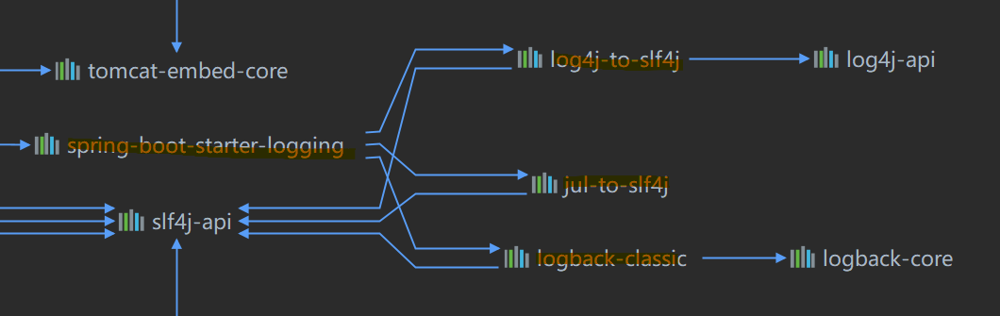
This means that Spring Boot has done the first two steps mentioned above for you.
Note:
- If you are using external dependencies not directly maintained by Spring Boot, you need to manually add the section
<exclusions><exclusions>in yourpom.xmlto exclude that logging package.
Using SLF4J Logging
In your test class, you can use the LoggerFactory to obtain your logger, then output different logging levels as shown below:
1 |
|
If you now run your application, you will see logs with info, warn and error only. This is because that Spring Boot uses the default logging level of info, meaning that only logger levels equal to and higher than info will be shown.
Log Format
The default log output from Spring Boot resembles the following example:
1 | 2020-06-19 18:33:04.627 INFO 25956 --- [ restartedMain] .e.DevToolsPropertyDefaultsPostProcessor : Devtools property defaults active! Set 'spring.devtools.add-properties' to 'false' to disable |
The following items are output:
- Date and Time: Millisecond precision and easily sortable.
- Log Level:
ERROR,WARN,INFO,DEBUG, orTRACE. - Process ID.
- A
---separator to distinguish the start of actual log messages. - Thread name: Enclosed in square brackets (may be truncated for console output).
- Logger name: This is usually the source class name (often abbreviated).
- The log message.
debug log
By default, ERROR-level, WARN-level, and INFO-level messages are logged. You can also enable a “debug” mode by starting your application with a --debug flag, or by specifying debug=true in your application.properties.
When the debug mode is enabled, a selection of core loggers (embedded container, Hibernate, and Spring Boot)** are configured to output more information. Enabling the debug mode does **not configure your application to log all messages with DEBUG level.
trace log
Alternatively, you can enable a “trace” mode by starting your application with a --trace flag (or trace=true in your application.properties). Doing so enables trace logging for a selection of core loggers (embedded container, Hibernate schema generation, and the whole Spring portfolio).
Specify Your Own Logging Pattern
You can specify the output pattern of your loggers with the logging.pattern.console or logging.pattern.file in your application.properties or application.yml file. For example:
1 | =%d{yyyy-MM-dd}[%thread] %-5level %msg%n |
Configuring Your Log Levels
Configuring Log Levels for a class/specific logger
All the supported logging systems can have the logger levels set in the Spring Environment (for example, in application.properties) by using logging.level.<logger-name>=<level> where level is one of TRACE, DEBUG, INFO, WARN, ERROR, FATAL, or OFF. The root logger can be configured by using logging.level.root.
The following example shows potential logging settings in application.properties:
1 | =debug |
Note:
- In the previous section, it is seen that some of the loggers have the name
o.s.bootoro.s.b. They actually stand fororg.springframework.boot. So you can configure them by specifying the logger level oforg.springframework.boot.
You can also specify logger levels for your own package (e.g. com.example):
1 | =debug |
Note:
- All the other loggers that you did not specify will use the default level (root level) of
info
Configuring Log Levels using Log Groups
It’s often useful to be able to group related loggers together so that they can all be configured at the same time. For example, you might commonly change the logging levels for all Tomcat related loggers, but you can’t easily remember top level packages.
To help with this, Spring Boot allows you to define logging groups in your Spring Environment. For example, here’s how you could define a “tomcat” group by adding it to your application.properties:
1 | logging.group.tomcat=org.apache.catalina, org.apache.coyote, org.apache.tomcat |
Once defined, you can change the level for all the loggers in the group with a single line:
1 | logging.level.tomcat=TRACE |
Spring Boot includes the following pre-defined logging groups that can be used out-of-the-box:
| Name | Loggers |
|---|---|
| web | org.springframework.core.codec, org.springframework.http, org.springframework.web, org.springframework.boot.actuate.endpoint.web, org.springframework.boot.web.servlet.ServletContextInitializerBeans |
| sql | org.springframework.jdbc.core, org.hibernate.SQL, org.jooq.tools.LoggerListener |
File Output
By default, Spring Boot logs only to the console and does not write log files. If you want to write log files in addition to the console output, you need to set a logging.file.name or logging.file.path property.
For example, to specify your output logging file to ./myLog.log, where the current directory would be your project directory (where your POM file resides), you could write:
1 | # inside application.properties |
The following table shows how the logging.* properties can be used together:
logging.file.name |
logging.file.path |
Example | Description |
|---|---|---|---|
| (none) | (none) | logging.file.name= |
Console only logging. |
| Specific file | (none) | logging.file.name=my.log |
Writes to the specified log file. Names can be an exact location or relative to the current directory. |
| (none) | Specific directory | logging.file.path=/var/log |
Writes spring.log to the specified directory. Names can be an exact location or relative to the current directory. |
Log files rotate when they reach 10 MB and, as with console output, ERROR-level, WARN-level, and INFO
-level messages are logged by default. However, if you have specified debug or trace that modifies the console log output, the log written to file will also include those debug or trace information.
Besides that, there are several other defaults that Spring Boot uses but can be configured:
- Size limits can be changed using the
logging.file.max-sizeproperty (by default it is 10MB). - Rotated log files of the last 7 days are kept by default unless the
logging.file.max-historyproperty has been set. - The total size of log archives can be capped using
logging.file.total-sizecap. When the total size of log archives exceeds that threshold, backups will be deleted. - To force log archive cleanup on application startup, use the
logging.file.clean-history-on-startproperty.
Logback Extensions
By default, the logging system you use is Logback. You can use and configure other logging systems as well (for more details, please visit this link). But if you use Logback, Spring Boot includes a number of extensions to Logback that can help with advanced configuration.
You can use these extensions in your logback-spring.xml(recommended) /or logback.xml configuration file, which you can add under the same directory as your application.properties file
Note:
- Because the standard
logback.xmlconfiguration file is loaded too early (directly by the logger), you cannot use extensions in it. You need to either uselogback-spring.xmlor define alogging.configproperty which would be loaded by Spring Boot.- The extensions cannot be used with Logback’s configuration scanning. If you attempt to do so, making changes to the configuration file results in an error.
Profile Specific Configuration
If you use logback-spring.xml instead of logback.xml, you will be able to use this additional functionality provided by Spring Boot.
The <springProfile> tag lets you optionally include or exclude sections of configuration based on the active Spring profiles. Profile sections are supported anywhere within the <configuration> element.
Use the name attribute to specify which profile accepts the configuration. The <springProfile> tag can contain a simple profile name (for example staging) or a profile expression.
- A profile expression allows for more complicated profile logic to be expressed, for example
production & (eu-central | eu-west). Check the reference guide for more details.
The following listing shows three sample profiles:
1 | <springProfile name="staging"> |
Environment Properties
The <springProperty> tag lets you expose properties from the Spring Environment for use within Logback. Doing so can be useful if you want to access values from your application.properties file in your Logback configuration.
The tag works in a similar way to Logback’s standard <property> tag. However, rather than specifying a direct value, you specify the source of the property (from the Environment). If you need to store the property somewhere other than in local scope, you can use the scope attribute. If you need a fallback value (in case the property is not set in the Environment), you can use the defaultValue attribute. The following example shows how to expose properties for use within Logback:
1 | <springProperty scope="context" name="fluentHost" source="myapp.fluentd.host" defaultValue="localhost"/> |
Developing Web Applications
Spring Boot is well suited for web application development. You can create a self-contained HTTP server by using embedded Tomcat, Jetty, Undertow, or Netty. Most web applications use the springboot-starter-web module to get up and running quickly. You can also choose to build reactive web applications by using the spring-boot-starter-webflux module.
Spring Web MVC Framework
The Spring Web MVC framework (often referred to as simply “Spring MVC”) is a rich “model view controller” web framework. Spring MVC lets you create special @Controller or @RestController beans to handle incoming HTTP requests (@Controller would be returning data that is being rendered by view, and @RestController would be returning raw data). Methods in your controller are mapped to HTTP by using @RequestMapping annotations.
The following code shows a typical @RestController that serves JSON data (by default):
1 |
|
Spring MVC is part of the core Spring Framework, and detailed information is available in the reference documentation. There are also several guides that cover Spring MVC available at spring.io/guides.
Spring Boot Framework
Since Spring Boot has all those AutoConfiguration classes doing the configuration work for us, it is much simpler and faster for us to develop a web application using Spring Boot. In summary, all we need to do is:
- Create a Spring Boot project (if you use Spring Initialzr, you will see that it is based on Spring Boot) with your desired dependencies
- Spring Boot will load all those AutoConfiguration files, which you can further customize using
application.propertiesorapplication.yml - Write your own program
The most important step is to understand the mechanism behind AutoConfiguration, which uses the xxxAutoConfiguration classes that has properties injected (identified with a certain prefix).
Spring Boot Web Application Project Structure
WebJars
WebJars is simply taking the concept of a JAR and applying it to client-side libraries or resources. For example, the jQuery library may be packaged as a JAR and made available to your Spring MVC application. There are several benefits to using WebJars, including support for Java build tools such as Gradle and Maven.
For Spring Boot to load and later package your web contents correctly, you need to add your contents at a correct place. If you look into your WebMVCAutoConfiguration class, you will see the following method:
1 | public void addResourceHandlers(ResourceHandlerRegistry registry) { |
So you see that all your web contents need to be placed in classpath:/META-INF/resources/webjars/ directory. This means that within your project, any file stored under /META-INF/resources/webjars/ can be visited by localhost:<yourPort>/webjars/<filePath>
For example, on the https://www.webjars.org/ you can choose which webjars to import into your project by copying the following to your pom file.
1 | <dependency> |
Then in your external dependency, you can see that it also has the structure mentioned above, and you can visit its resources with localhost:8080/webjars/bootstrap/4.0.0/webjars-requirejs.js, for example. Then you will see that js file displayed:
1 | /*global requirejs */ |
Static contents
In the same method where you find those webjar structure, you can also find where you should store your static contents:
1 | String staticPathPattern = this.mvcProperties.getStaticPathPattern(); |
which finds your resource under the following directories:
1 | "classpath:/META-INF/resources/", |
This means that if a request is not handled, you will be redirected to the static files under those locations.
For example, if you have an html page under the following directory:
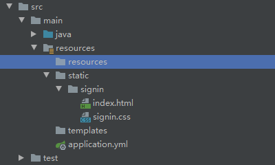
Then you can visit the html by `localhost:8080/signin/index.html
Welcome Page
Welcome page is basically the home page of your application. Spring Boot also has a default mapping defined in the WebMvcAutoConfiguration class:
1 |
|
This in the end will look for index.html below all static content directories mentioned above, and maps to `/`.**
For example, if you have the following structure:
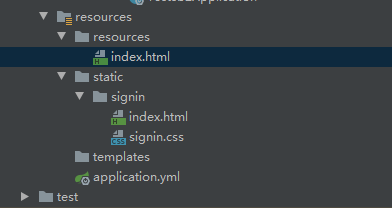
Then you can visit this index.html by localhost:8080/
Configure Your Web Properties
If you want to customize those locations, you can also use the spring.resources.xxx to modify the default paths scanned.
This works because in the ResoucrProperties class, Spring Boot defines locations for scanning static resources as shown below:
1 | ( |
This means you can change those locations by specifying in your application.properties or applications.yml:
1 | =classpath:/hello/, classpath:/example |
Using Web Templates
Web templates can be used to generate dynamic contents based on static templates. The basic mechanism is shown below:
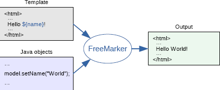
Common template engines include JSP, Velocity, Freemarker,Thymeleaf, among which Thymeleaf is the default template engine used by Spring Boot.
Importing Thymeleaf
Since we are using Spring Boot with Maven, it is easy to include thymeleaf into your project. If you have already inherited the parent spring-boot-starter , then you just need to include the following dependency in your pom
1 | <dependency> |
However, this uses the version 2.3.1 (specified in the parent pom). It is recommended to use thymeleaf 3 or above for more functionalities. To do this, you need to configure the properties in your pom.
1 | <properties> |
Using Thymeleaf
The simplest example of using Thymeleaf would be to return an html page upon a request.
If we look into the ThymeleafProperties class (located in SpringBootAutoConfigure jar, under the folder thymeleaf), you will see:
1 | ( |
where
1 | public static final String DEFAULT_PREFIX = "classpath:/templates/"; |
means that Thymeleaf scans through classpath:/templates/ for files ending with .html to be rendered.
Now, to hand you back a html page based on request using Thymeleaf, all you need to do is add a html page with the same return result as your html in your templates folder:
For example, if you have
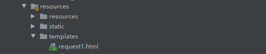
Then your handler could look like:
1 |
|
Note:
- Now you should not use a
@RestController, since it will automatically use the@ResponceBodywhich will render the page by Spring Boot itself instead of byThymeleaf
Thymeleaf Syntax
For more information, you can follow the official thymeleaf guide.
th:xxxIf you place
th:<xxx>inside any html tag, where<xxx>could be any HTML property (includingtext,class,id, etc.), thenThymeleafwill replace the original value with the value you specified. For example, you can replace the text appearing in adivwith:1
2
3
4<!-- Value placed would be parsed as a key, whose value you need to specifiy in your Handler method -->
<div th:text="${Hello}">
Original Text
</div>and the corresponding Java class could look like:
1
2
3
4
5
6
7
8
9
public class HTMLRequests {
("/getHtmlPage")
public String testHTMLRequest(Map<String, String> map1){
map1.put("Hello","Value Retrieved from key Hello"); // the value will be retrieved
return "request1"; // this tells you which html file to return
}
}
Precendence
Since there is no notion of code precedence in html, if we specified multiple
th:xxxwithin the same tag, collision will happen. To solve this,Thymeleafdefines its own precedence rule: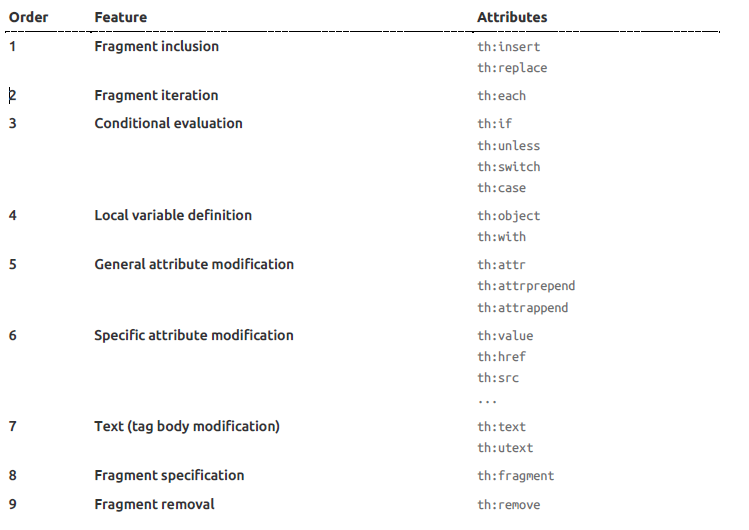
Thymeleaf Expressions
Simple expressions: Variable Expressions: ${...} # can be used to read/store objects, and invoking certain methods on them Selection Variable Expressions: *{...} # mainly used in combination with th:object, which stores an object in the current scope # then using *{...} will select/read a certain attribute of that stored object Message Expressions: #{...} # used for internationalization Link URL Expressions: @{...} # used for generating dynamic URL addresses # for example: <!-- Will produce 'http://localhost:8080/gtvg/order/details?orderId=3' (plus rewriting) --> <a href="details.html" th:href="@{http://localhost:8080/gtvg/order/details(orderId=${o.id})}">view</a> <!-- Will produce '/gtvg/order/details?orderId=3' (plus rewriting) --> <a href="details.html" th:href="@{/order/details(orderId=${o.id})}">view</a> Fragment Expressions: ~{...} # this will be talked about later Literals: Text literals: 'one text' , 'Another one!' ,… Number literals: 0 , 34 , 3.0 , 12.3 ,… Boolean literals: true , false Null literal: null Literal tokens: one , sometext , main ,… Text operations: String concatenation: + Literal substitutions: |The name is ${name}| Arithmetic operations: Binary operators: + , - , * , / , % Minus sign (unary operator): - Boolean operations: Binary operators: and , or Boolean negation (unary operator): ! , not Comparisons and equality: Comparators: > , < , >= , <= ( gt , lt , ge , le ) Equality operators: == , != ( eq , ne ) Conditional operators: If-then: (if) ? (then) If-then-else: (if) ? (then) : (else) # same as Java tertiary operation Default: (value) ?: (defaultvalue) Special tokens: No-Operation: _1
2
3
4
5
6
7
8
9
10
11
12
13
14
15
16
17
18
19
20
21
(For more information, please visit Chapter 4 of the [Thymeleaf Documentation](https://www.thymeleaf.org/doc/tutorials/3.0/usingthymeleaf.html))
Example:
In your Java program, you can have:
```java
@Controller
public class HTMLRequests {
@RequestMapping("/getHtmlPage")
public String testHTMLRequest(Map<String, String> map1, Map<String, Object> map2){
map1.put("Hello","<h3>Value Retrieved from key Hello with h3 heading<h3>");
String[] names = {"jason","michael","bowen"};
List users = Arrays.asList(names);
map2.put("Users",users);
return "request1";
}
}
In your html code, you can have:
1 |
|
where
th:eachcan be seen as a for loop iteration, that does the work offor element: iterable.[[${}]]is the inline version ofth:text=${}.[(${})]is the inline version ofth:utext="${}"
Internationalization Example
To enable your website to show contents in different languages based on users’ preferences (e.g. browser language used), you need to use internationalization, which is supported by Spring Boot. (In Spring MVC, this is configured by MessageResouce class. However, in Spring Boot, it is configured automatically with MessageSourceAutoConfiguration.)
In summary, you need to do the following steps:
- Create a new folder under your
resourcefolder, in which you will store all your internationalization properties file. - Create properties file in the format of
<xxx>.properties, which will be used as the default properties file for that specific pagexxx(for example). - Create other properties file in the format of
<xxx>_<language>_<CountryCode>.properties. In this way, IntelliJ will recognize them, knowing that you are doing internationalization. - Now, since IntelliJ recognized them as internationalization files, you can use the
Resource Bundleoption when editing your properties file. - After configuring your
propertiesfile, you need to specify the base path (e.g. a property under the locationresources/i18n/login_en_US.propertieshave the base path ofi18n.login) of yourpropertiesfile withspring.messages.basename=<yourBasePath>in yourapplication.properties. - Finally, you just need to go to your html page and use the
thmeleafmessages expression#{...}(for example, if you had a property namedlogin.title=...in yourlogin_en_US.propertiesfile, you should use#{login.title}) to render your message expression text automatically based on your browser language.
For example:
- if you have done step 1-4 correctly, you should be working like this:
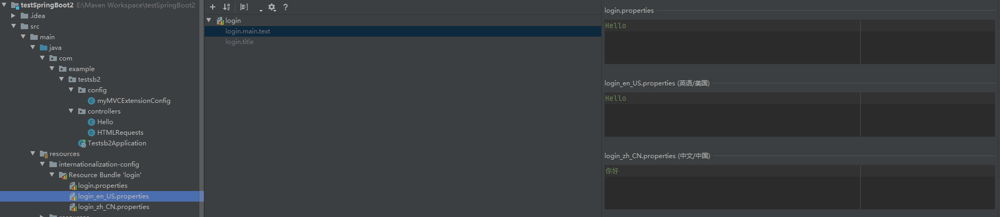
Note:
If you used Chinese in your properties files, and you get unreadable codes, you might need to change your decoding to enable ASCII conversion. For example, you can try the following:
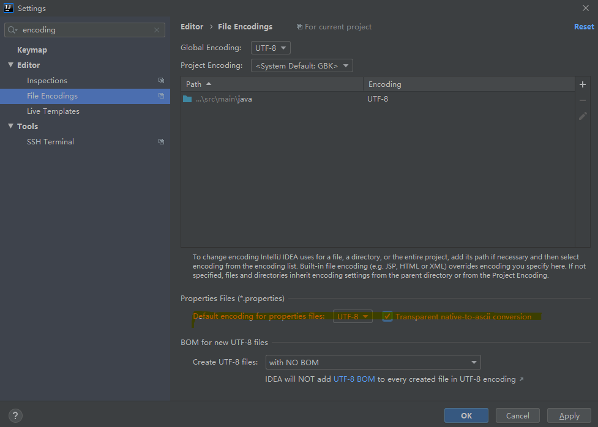
If you want to achieve the language swapping by a button on your page, you need to use the LocaleResolver class (also inside the MessageResouceAutoConfiguration class).
By default, this works by getting the section Accept-Language in the request header when you send your html request. To override this behavior, you need to write your own LocaleResolver class.
For example,
- first in your html page, you would have a button that creates those request with language:
1 | <!-- this will be parsed as index.html?l=zh_CN, where index.html would be this same page --> |
- In your
MyLocaleResolverclass, you can write:
1 | public class MyLocaleResolver implements LocaleResolver{ |
- Add this component to your application as a bean. This is because the Spring Boot
LocaleResolveris injected with the condition:@ConditionalOnMissingBean, meaning that if we injected this bean, then Spring Boot’s default resolver will not be activated:
1 | // in one of your @Configuration class, for example |
Sending and Handling Post Request
To handle a user login, for example, you need to do two parts (in abstract).
- First, in your HTML page, you need to send a request (
th:action="@{<xxx>}") with your form, in which you have each field that you need to be set with a specificname=xxxattribute. - Then, you add a handler to with
PostController()to map to that request, and gets the value in those fields with@RequestParam("<xxx>") String xxx.
For example:
In your html page, you can have:
1 | <form class="..." action="..." th:action="@{/user-login}" method="post"> |
In your Java class, you can have:
1 |
|
Note:
- If hot swapping is not working (assuming you have enabled it) when you changed those static/templates html code, you should try:
- add the line
spring.thymeleaf.cache=falsein yourapplication.propertiesfile- use
Ctrl+F9or manually click the build button to rebuild your project
If you want to add the functionality of popping up red text in your html page with Login Failed when your user failed the authentication, you can use the th:if functionality with some small changes to your controller code:
In your controller:
1 |
|
Then in your html code, you can have:
1 | <!-- For example, you can place in inside the form you use to submit login information --> |
@RequestParam/@PathParam/@Param
The difference between @RequestParam and @PathParam is best illustrated from using an example.
The general difference between the two can be seen from the following html request:
1 | localhost:8080/home/<PathParam>/somethingelse?<RequestParam>=something |
Therefore, suppose you made a html request:
1 | localhost:8080/home/jason/somethingelse?order=something |
Then you can get the parameter jason and order=something with:
1 | (value = "/home/{user}/somethingelse", method = RequestMethod.GET) |
This makes it clear, so that :
@PathVariablegets the variable in the path with the format{<VariableName>}@RequestParamgets the variable in the request parameter (the key-value pair after the query?punctuation)
On the other hand, @Param does the reverse job of making a specific variable in the method available for outer access.
For example:
1 |
|
Then when this method is called with an input argument, you can get it in a xml mapper, for example:
1 | <!-- Other section of this xml ignored for simplicity --> |
Spring Boot MVC Extensions
Spring Boot provides auto-configuration for Spring MVC that works well with most applications. The auto-configuration adds the following features on top of Spring’s defaults:
- Inclusion of
ContentNegotiatingViewResolverandBeanNameViewResolverbeans. - Support for serving static resources, including support for
WebJars (covered before)). - Automatic registration of
Converter,GenericConverter, andFormatterbeans.- For example, converting an object to
jsonformat
- For example, converting an object to
- Support for
HttpMessageConverters.- For example, converts and handles http request
- Automatic regis tration of
MessageCodesResolver(covered later in this document). - Static
index.htmlsupport (covered before) - Custom Favicon support
- Automatic use of a
ConfigurableWebBindingInitializerbean.
If you want to keep those Spring Boot MVC customizations and make more MVC customizations (interceptors, formatters, view controllers, and other features), you can add your own @Configuration class of type WebMvcConfigurer but without @EnableWebMvc.
If you want to provide custom instances of RequestMappingHandlerMapping, RequestMappingHandlerAdapter, or ExceptionHandlerExceptionResolver, and still keep the Spring Boot MVC customizations, you can declare a bean of type WebMvcRegistrations and use it to provide custom instances of those components.
If you want to take complete control of Spring MVC, you can add your own @Configuration annotated with @EnableWebMvc, or alternatively add your own @Configuration-annotated DelegatingWebMvcConfiguration as described in the Javadoc of @EnableWebMvc.
Example: Adding a ViewController
If you want to control a certain request to show the output of another request, you can use a ViewController to control the view of a page. However, by default Spring Boot does not have AutoConfiguration classes for that. Therefore, you would need to add your own ViewController by “adding your own @Configuration class of type WebMvcConfigurer but without @EnableWebMvc“ (mentioned above).
For instance, to map the request /request to request1 (which you specified as a html page configured by Thymeleaf), you need to write the configuration class:
1 |
|
Mechanism
Since WebMvcAutoConfiguration is the AutoConfiguration class for Spring MVC, we can look into that class to understand those extension mechanisms. Within that class, you will see:
1 | ({WebMvcAutoConfiguration.EnableWebMvcConfiguration.class}) |
Which imports WebMvcAutoConfiguration.EnableWebMvcConfiguration.class, and that class extends DelegatingWebMvcConfiguration by having the following signature:
1 | public static class EnableWebMvcConfiguration extends DelegatingWebMvcConfiguration implements ResourceLoaderAware { |
Finally, in the parent class, you will see:
1 | ( |
And finally if we trace the configureViewResolvers method, we will see:
1 | public void addViewControllers(ViewControllerRegistry registry) { |
This is why we needed to extend WebMvcConfigurer class for extending its functionality, add calling the method addViewControllers() in the above example to add our ViewController.
Graceful shutdown
Graceful shutdown is supported with all four embedded web servers (Jetty, Reactor Netty, Tomcat, and Undertow) and with both reactive and Servlet-based web applications. It occurs as part of closing the application context and is performed in the earliest phase of stopping SmartLifecycle beans.
This stop processing uses a timeout which provides a grace period during which existing requests will be allowed to complete but no new requests will be permitted. The exact way in which new requests are not permitted varies depending on the web server that is being used. Jetty, Reactor Netty, and Tomcat will stop accepting requests at the network layer. Undertow will accept requests but respond immediately with a service unavailable (503) response.
To enable graceful shutdown, configure the server.shutdown property, as shown in the following example:
1 | server.shutdown=graceful |
Working With Databases
Introduction
Spring Boot allows for both the use of relational databases and non-relational databases. This is achieved by using the Spring Data project, which handles all those requests for us by enabling a number of auto configurations, including some database settings. For more information, you can look at the official documentation.
Using JDBC
Connecting to databases in Spring Boot is generally easy to do. All you need to make sure is that:
- Your IP address is valid for connection to your remote database (applies only if you are using a remote database)
- You configured your login credentials properly in
application.ymlorapplication.properties - Finally you can just use a
autowiredDataSourceobject in Spring Boot to establish a connection.
Adding JDBC in Maven Dependency
To use JDBC, you need to add the following dependencies:
1 | <dependency> |
Configuring Your Login Credentials
You can configure your login credentials either in application.yml or in application.properties
1 | spring: |
Creating a Connection
Since we are testing the connection for now (not using it yet), we can do this in our test class:
1 |
|
And if things are running smoothly, you should get something like this:
1 | 2020-07-06 14:09:36.306 INFO 24324 --- [ main] com.zaxxer.hikari.HikariDataSource : HikariPool-1 - Starting... |
Note:
If you get connection errors, but you are certain that your login username/password are correct, then it could be that your machine’s IP address has not been approved in the SQL server (again, this should happen only if you are connecting to a remote database). To approve connections from your machine, you need to run the following commands in your SQL:
then:
finally, to make sure those changes are updated:
Spring Boot JDBC DataSource Mechanism
How does all the above work? How to I now use that connection to run SQL queries and scripts?
If you go to the org.springframework.boot.autoconfigure.jdbc package, you will see the class DataSourceConfiguration. Parts of that class is shown below:
1 | ( |
Now, if we trace that initializeDataSourceBuilder(), you will see:
1 | // A DataSourceBuilder object is returned, which contains all those login information |
Another important class is DataSourceAutoConfiguration, which (as the name suggests) contains default configurations that Spring Boot uses, as well as telling your which configurations can be overridden in your application.properties or application.yml file. Part of the class is shown below:
1 | public class DataSourceAutoConfiguration { |
Lastly, for running scripts, if you go to DataSourceInitialzer class, you will see:
1 | class DataSourceInitializer { |
This means that you can run scripts or data by specifying the property spring.datasource.schema or spring.datasource.data, or, if you names your scripts with schema-<xxx>.sql and data-xxx.sql, Spring Boot will automatically run those for you.
Example: Running a Schema Script
Now, suppose if you have a SQL script called users.sql, which creates a table called users, you can run it by:
- Placing that file under your
resourcefolder in your project. In this example, it is placed underresources/sql/users.sql - Add the line
spring.datasource.schemain yourpropertiesorymlfile:
1 | spring: |
Note:
- Since
spring.datasource.schematakes in arguments as a list, you need to input your files with- <your-script-path>format, as shown above. This also means that you can run multiple scripts easily.
Using JDBC for SQL Query
First, before jumping right into using it, we should look at some source code in JdbcTemplateAutoConfiguration.
1 | ({DataSource.class, JdbcTemplate.class}) // notice here |
At this point, we certainly have and are using a DataSource class. This means that Spring Boot will automatically import the class JdbcTemplateConfiguration:
1 | class JdbcTemplateConfiguration { |
And finally, we see that we get a bean JdbcTemplate, which will be the main tool that we will use for querying a database.
Now, to use that JdbcTemplate to query for something, we can create a controller:
1 |
|
Then if you go your browser and try it, you will get your data (assuming if you have any) packaged into a map format returned to you as a json. For example, if you have:
1 | +------+-------+------+ |
Then this entry will be returned as a map, in which the column name are the keys, and the values are the values in the map.
1 | {"id":1,"name":"jason","sex":"m"} |
This also explains why you had the line List<Map<String, Object>> data, since each entry row will be retrieved as a map object, and a collection of those map objects is then stored into a List.
Using Druid DataSource
DataSource is a name given to the connection set up to a database from a server. The name is commonly used when creating a query to the database.
There are potentially many DataSources available, for example Hikari, which has a very good performance. However, this guide will focus on Druid, which is a DataSource made by Alibaba, known for its security and monitoring features (in the expense of some performance).
Adding Druid to your Maven Dependency
Include the following in your pom.xml.
1 | <!-- https://mvnrepository.com/artifact/com.alibaba/druid-spring-boot-starter --> |
The latest version can be found at https://mvnrepository.com/artifact/com.alibaba/druid-spring-boot-starter/1.1.23
Note:
- Since you are using Spring Boot, you should use the
Druidpackage above which has been configured with Spring Boot support. If you used this https://mvnrepository.com/artifact/com.alibaba/druid then you need to do much more work to make everything working.
And then add the property spring.datasource.type=com.alibaba.druid.pool.DruidDataSource. For example, in the application.yml, it could look like:
1 | spring: |
Configuring Your Druid DataSource
At this point, if you run your test class that you wrote before:
1 |
|
You will see the line:
1 | 2020-07-06 16:11:07.865 INFO 3200 --- [ main] com.alibaba.druid.pool.DruidDataSource : {dataSource-1} inited |
which means that now the DataSource has been switched to Druid. However, if you remember the DataSourceProperties class, which binds all the properties from your properties or yml file, you will see:
1 | ( |
Now, we see the problem that some properties of the Druid package is not specified in the class above. This means that those values will not be injected/bound to the DataSource object created. For example, if you have specified:
1 | spring: |
Then if you run the debug mode of your test class and look at that DataSource file created, you will see:
1 | initialSize = 0 |
which is obviously not what you wanted.
Therefore, this means that we need to write our own DataSource bean to inject into the container, replacing the default DataSource class above, and binding all those additional properties:
1 |
|
But you also need to change other fields such as username and password (and all those connection parameters) to:
1 | spring: |
As otherwise those cannot be bounded correctly since you specified @ConfigurationProperties(prefix="spring.datasource.druid").
Now, if you re-run the test class, you will see the DataSource object to have:
1 | maxActive = 0 |
And everything else would work just fine.
Configuring Druid Monitor
To enable and use the monitor in druid, you need to:
- Create a
Servletthat manages the requests to the backend - Create a
Filterthat filters those requests
First, to create a StatViewServlet to monitor your requests, you need to register it as a Servlet and inject it into your application. But what can be configured from that StatViewServlet? We can go to the StatViewServlet class:
1 | public class StatViewServlet extends ResourceServlet { |
More can be seen in that ResoucrServlet class as well:
1 | public abstract class ResourceServlet extends HttpServlet { |
Therefore, some of your configuration can be:
1 | // in a @Configuration class |
Second, to create a filter for filtering which requests to be intercepted, you can use the WebStatFilter.
1 | // Preferably the same configuration class as above |
Some of the parameters used above can be found in the WebStatFilter class:
1 | public class WebStatFilter extends AbstractWebStatImpl implements Filter { |
Now, if you visit localhost:8080/test-druid/, you will be redirected to localhost:8080/test-druid/login.html, and you can enter your login credentials there. If you enter the login credentials specified in the StatViewServlet class, you should be redirected to the monitor page.
Using Mybatis
(additional reference: https://www.baeldung.com/mybatis; https://mybatis.org/mybatis-3/getting-started.html)
Adding Mybatis in Maven Dependency
To make use of MyBatis we need to add the dependency to our pom.xml:
1 | <dependency> |
The latest version of the mybatis-spring dependency can be found here.
Configuring your DataSource Connection
This is essentially the same as the previous section. If you use the default DataSource, you only need to specify a few parameters in your application.yml. However, if you want to use the Druid DataSource, you need to also include a @Configuration class to configure that Druid DataSource properly as shown above.
Creating Components/Beans corresponding to your Table
Now, you need to create Beans/Objects that correspond to your table.
Suppose you have a table in one of your databases looking like this:
| id | departmentName |
|---|---|
| 1 | Science |
| … | … |
Then, your corresponding Java class should look like:
1 | package com.example.testmybatis.components; |
Creating Mapper Annotations to Enable MyBatis Queries
Now, to make use of that Department object and query for data, we need to create a @Mapper class that tells Spring Boot MyBatis that this will be mapping/making queries/query data.
For example, some common operations would look like:
1 | package com.example.testmybatis.mappers; |
And then you just need to have a controller that first has an autowired DepartmentMapper, and then uses that to create queries:
1 | package com.example.testmybatis.controller; |
Note:
- At this point, you should see that IntelliJ tells you that there exists an error that
DepartmentMapper departmentMappercannot be auto-wired. This is because we created the mapper interface instead of a class. However, this is exactly how MyBatis works, so even if IntelliJ shows you this potential error, you should still be able to build this and get this to work.
To get the first entry, you can use http://localhost:8080/dept/1
To insert a second entry, you can use http://localhost:8080/dept?id=2&&departmentName=Math
Note:
If you have used an
idfield in your database that is increment automatically, and in yourmapperclass you only specified the need to insert adepartmentName, then by default thatDepartmentobject will not know about the auto-incrementedid. Therefore, to display correct result, you need to add the annotation@Options(useGeneratedKeys = true, ketProperty = <thatField>)above that@Insertquery. For example:
2
3
("insert into Department values (#{departmentName})")
public int insertDeparment(Department department);
Creating Mapper XML to Enable MyBatis Queries
If you use xml to create mappers, it allows for more functionalities including Dynamic SQL. However, it does require you to create an additional xml file.
If you use xml to create mappers, your mapper java class will be changed to:
1 | package com.example.testmybatis.mappers; |
Then, the details of those queries would be in an xml file. In general, you will create your xml file in the following steps:
- Include the proper headings
- Specify your mapper
namespace(which@Mapperto bind to) - Specify the mappings of your return result
- Write queries with
idbound to that method call in your@Mapperclass- If it has a return result, each entry you got will be a
Map, which can be further mapped to the mapping you created in Step 3
- If it has a return result, each entry you got will be a
For example, to get the equivalent query for @Select("select * from Department where id=#{inputId}"), you would have:
1 |
|
A few things to observe here are:
- Namespace in Mapper XML should be same as Fully Qualified Name (FQN) for Mapper Interface
- Statement id values should be same as Mapper Interface method names.
- If the query result column names are different from bean property names we can use
<resultMap>configuration to provide mapping between column names and their corresponding bean property names.
Last but not least, if you try to build and run this, you will notice that xml files tend to be not included in the Spring Boot projects. This means that you need to use plugins in pom.xml to modify this behavior:
1 | <build> |
Now, if you run mvn package, and you look into your target folder, you will find that xml file, and everything would work fine if you run the application.
Building SqlSessionFactory from XML
Every MyBatis application centers around an instance of SqlSessionFactory. A SqlSessionFactory instance can be acquired by using the SqlSessionFactoryBuilder. SqlSessionFactoryBuilder can build a SqlSessionFactory instance from an XML configuration file, or from a custom prepared instance of the Configuration class.
Building a SqlSessionFactory instance from an XML file is very simple. It is recommended that you use a classpath resource for this configuration, but you could use any InputStream instance, including one created from a literal file path or a file:// URL. MyBatis includes a utility class, called Resources, that contains a number of methods that make it simpler to load resources from the classpath and other locations.
For example, this would be how you create a SqlSessionFactory instance:
1 | String resource = "org/mybatis/example/mybatis-config.xml"; |
The configuration XML file contains settings for the core of the MyBatis system, including a DataSource for acquiring database Connection instances, as well as a TransactionManager for determining how transactions should be scoped and controlled. The full details of the XML configuration file can be found in later sections, but here is a simple example:
1 |
|
While there is a lot more to the XML configuration file, the above example points out the most critical parts. Notice the XML header, required to validate the XML document. The body of the environment element contains the environment configuration for transaction management and connection pooling. The mappers element contains a list of mappers – the XML files and/or annotated Java interface classes that contain the SQL code and mapping definitions.
Working With JPA
Spring has support for using JPA (Java Persistence API) as well as other data access technology via its Spring Data project, which aims to simplify data access operations by providing us with easy to use APIs/Templates (for example, JDBCTemplate, RedisTemplate).
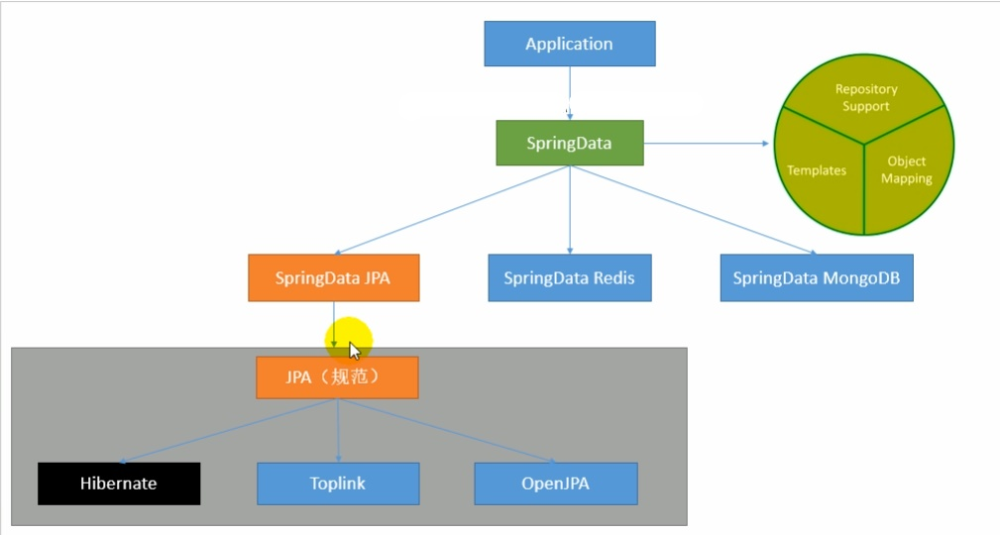
This means that all we need to do is to program towards APIs provided by Spring Data!
Importing JPA
To use JPA with Spring Boot, you need to include the following dependency in your pom,xml:
1 | <dependency> |
Under the hood, Spring Boot uses Hibernate for JPA implementation.
Using JPA
Since JPA is based on the idea of ORM (Object Relational Mapping), the first thing you need to do is to create a class that maps to your data table. Then, once you have setup everything, all you need to do is to call methods from a Repository which has implemented many query implementations for you.
In summary, you need to do the following steps:
Create a class that will map to the entries in your table, annotate it with
@Entity, which tells JPA that it is an object that it can map toCreate a interface that extends
JpaRepository<T, ID>or its parent classes (e.g.CrudRepository<T, ID>, but of course the lower in hierarchy the more functionalities), annotate it with@Repositoryso that Spring Boot will take it in(Optional) By default, JPA has the naming strategy of converting to snake case. If you want to keep the case as it is in your Java class, you need to use:
1
=org.hibernate.boot.model.naming.PhysicalNamingStrategyStandardImpl
Use that interface created above with
@Autowire, and call existing methods from it for querying (e.g.findAllById())
For example, suppose you have a table in your database with name Product, and the following fields/columns:
| id | productName | productPrice | status |
|---|---|---|---|
| 1 | AA | 100.00 | sold |
Then, your @Entity class would look like:
1 | package com.example.testmybatis.components; |
Your @Repository would look like:
1 | package com.example.testmybatis.repository; |
Your application.yml for configuring your JPA looks like:
1 | spring: |
Now, everything has been setup correctly and you can use this by calling methods from your ProductRepository:
1 | package com.example.testmybatis.controller; |
Handling Exceptions in Spring Boot
By default, if you made a request that is not handled at all by your Spring Boot Application, a default error page will show:
(If you have visited this from applications other than a browser, e.g. if you have visited then the above will be shown as a json format)
Mechanism
Alike other features, this is also configured by an AutoConfiguration class, located at org.springframework.boot.autoconfigure.web.servlet.error, called ErrorMvcAutoConfiguration.
There, some important methods include:
1 | public class ErrorMvcAutoConfiguration { |
Detailed Steps
- Whenever errors with code
4xx,5xxtake place, this error will be registered as an error page through
1 | /** |
which comes from:
1 | public ErrorPageCustomizer errorPageCustomizer(DispatcherServletPath dispatcherServletPath) { |
Notice the line:
1 | ErrorPage errorPage = new ErrorPage( |
Now, if you look at the method getPath(), you will be navigated to the method:
1 | public String getPath() { |
which comes from:
1 | public class ErrorProperties { |
This means that by default, when an error happens, Spring Boot will come to /error request. Now, what happens if we did not specify a handler to handler that /error request?
- At this point, Spring Boot will come to use the bean
BasicErrorController, which is shown above in the Mechanism section as well:
1 |
|
The class BasicErrorController by its name suggests that it handles all those /error request:
1 |
|
within this class, you will also find:
1 | (produces = MediaType.TEXT_HTML_VALUE) // notice this line |
In the first case, an error page produces a html page, with produces = MediaType.TEXT_HTML_VALUE. In the second case, it is not specified to produce a html page. But how does a Spring Boot know whether a request comes from a browser or other client applications?
This information is actually hidden in the
Request Headerwhenever you send any requests.If you send a request from a browser, you will see:
1
2
3Request Headers:
...
Accept: text/html...If you send a request from other client applications, it will look like:
1
2
3Request Headers:
...
Accept: "*/*"
Lastly, the ModelAndView object is created by this method:
1 | protected ModelAndView resolveErrorView(HttpServletRequest request, HttpServletResponse response, HttpStatus status, |
But what is that ErrorViewResolver object?
Remember the
DefaultErrorViewResolverobject that we have seen in the Mechanism section:1
2
3
4
5
6
7
8
9
10
11(proxyBeanMethods = false)
static class DefaultErrorViewResolverConfiguration {
...
(DispatcherServlet.class)
@ConditionalOnMissingBean(ErrorViewResolver.class)
DefaultErrorViewResolver conventionErrorViewResolver() { // notice here
return new DefaultErrorViewResolver(this.applicationContext, this.resourceProperties);
}And the
DefaultErrorViewResolverclass looks like:1
2
3
4
5
6
7
8
9
10
11
12
13
14
15
16
17
18
19
20
21
22
23
24
25
26
27
28
29
30
31
32
33
34
35
36
37
38
39
40
41
42public class DefaultErrorViewResolver implements ErrorViewResolver, Ordered {
private static final Map<Series, String> SERIES_VIEWS;
static {
Map<Series, String> views = new EnumMap<>(Series.class);
views.put(Series.CLIENT_ERROR, "4xx"); // This will be mentioned in the next section
views.put(Series.SERVER_ERROR, "5xx");
SERIES_VIEWS = Collections.unmodifiableMap(views);
}
...
private ModelAndView resolve(String viewName, Map<String, Object> model) {
// e.g. error/404
String errorViewName = "error/" + viewName;
// first try to find if such a page exists in your template/or if you have a template engine
TemplateAvailabilityProvider provider = this.templateAvailabilityProviders.getProvider(errorViewName,
this.applicationContext);
if (provider != null) {
// if it exists, return a ModelAndView object
return new ModelAndView(errorViewName, model);
}
// if not, go to the method below
return resolveResource(errorViewName, model);
}
private ModelAndView resolveResource(String viewName, Map<String, Object> model) {
// looks for static locations (your static folders)
for (String location : this.resourceProperties.getStaticLocations()) {
try {
Resource resource = this.applicationContext.getResource(location);
resource = resource.createRelative(viewName + ".html");
if (resource.exists()) {
return new ModelAndView(new HtmlResourceView(resource), model);
}
}
catch (Exception ex) {
}
}
return null;
}This means that we can customize those error pages by placing the
htmlfile with that specifiederror codeunder the correct directory.- However, this could be troublesome if we need to create a new html for every
error code. This is where the4xxand5xxcomes in handy:- If you names a
htmlpage with4xx.html, then all error codes beginning with a4and does not match any other<error-code>.htmlpage you placed in that directory, then the4xx.htmlwill be used. - If you names a
htmlpage with5xx.html, then all error codes beginning with a5and does not match any other<error-code>.htmlpage you placed in that directory, then the5xx.htmlwill be used.
- If you names a
- However, this could be troublesome if we need to create a new html for every
Lastly, if you are using those
4xx.htmlor5xx.html, how do you correctly find out the actual error code to display on your page? In other words, where are those attributes stored?This is explained by the class we mentioned above in the section Mechanism, called
DefaultErrorAttributes:1
2
3
4
5
(value = ErrorAttributes.class, search = SearchStrategy.CURRENT)
public DefaultErrorAttributes errorAttributes() {
return new DefaultErrorAttributes();
}The class
DefaultErrorAttributescontains the methods:1
2
3
4
5
6
7
8
9
10
11
12
13
14
15
16
17
18
19
20
21
22
23
24
25
26
27
28
29
30
31
32
33
34
35
36
37
38
39
40
41public Map<String, Object> getErrorAttributes(WebRequest webRequest, ErrorAttributeOptions options) {
Map<String, Object> errorAttributes = this.getErrorAttributes(webRequest, options.isIncluded(Include.STACK_TRACE));
if (this.includeException != null) {
options = options.including(new Include[]{Include.EXCEPTION});
}
if (!options.isIncluded(Include.EXCEPTION)) {
errorAttributes.remove("exception"); // information 1
}
if (!options.isIncluded(Include.STACK_TRACE)) {
errorAttributes.remove("trace"); // information 2
}
if (!options.isIncluded(Include.MESSAGE) && errorAttributes.get("message") != null) {
errorAttributes.put("message", ""); // information 3
}
if (!options.isIncluded(Include.BINDING_ERRORS)) {
errorAttributes.remove("errors"); // information 4
}
return errorAttributes;
}
private void addStatus(Map<String, Object> errorAttributes, RequestAttributes requestAttributes) {
Integer status = (Integer)this.getAttribute(requestAttributes, "javax.servlet.error.status_code");
if (status == null) {
errorAttributes.put("status", 999);
errorAttributes.put("error", "None");
} else {
errorAttributes.put("status", status); // information 5
try {
errorAttributes.put("error", HttpStatus.valueOf(status).getReasonPhrase());
} catch (Exception var5) {
errorAttributes.put("error", "Http Status " + status);
}
}
}where those lines commented with
informationare shared, meaning that you can get those information as a variable in your template engine. For example, to get the error code inline, you could do:1
2
3<p>
status:[[${status}]]
</p>
Customizing your Error Pages with HTML
If you are using a template engine, then your error pages should go into the directory
templates/error/<error-code>.html. (Or the4xx.htmlor5xx.htmlfile)For example, if you want to have a customized response to
404error, you should place your404.htmltotemplates/error/404.html.If you are not using a template engine, or that your template engine cannot find that specific error page, then the error request will map to pages stored under your
staticfolder.For example, if you want to have a customized response to
404error, you should place your404.htmltostatic/error/404.html.If both the above cannot be satisfied, Spring Boot will start its default mechanism of resolving and constructing a White Labeled Page.
Customizing your Error Pages with JSON
In summary, you need to do:
- Create your own
Exceptionclass, which can contain information such as error message. - Create a
@ControllerAdviceclass, which is a central place for handling/customizing your@ExceptionHandler(<YourException>.class) - Throw that
Exceptionclass in your controller when needed. ThatxxxExceptionwill first go to that@ExceptionHandler(xxxException.class)you created in the step above, and if not found, it will take its default JSON format output.
Example: ALWAYS Returning Customized JSON
The basic step follows the summary above, but when you specified @ExceptionHandler, you also specify @ResponceBody.
For example, first you can create an Exception class called RequestNotFoundException:
1 | // located in your project, not in those static folders of course |
Then, this could be your @ControllerAdvice for handling the exceptions you throw:
1 |
|
Lastly, if you throw this RequestNotFoundException in your program, for example:
1 |
|
Now, if you try: localhost:8080/hello-response?req=HAHA, you will go to a page with the json data you specified in your @ExceptionHandler() method:
1 | errorCode: "599" |
However, this has a side-effect:
- Since you have specified
@ResponceBody, no matter what you use (browser or other client applications) you will get ajsonformatted output, instead of the automatic resolution tohtmlpage when handled to a browser.
Example: Reproducing HTML for Browser
If you want the behavior that Spring Boot had. namely: provides a html page when requested by a browser, but a json page when requested by other client side applications, you need to tweak your @ExceptionHandler a bit.
For example, if you had the same RequestNotFoundException class, your @ExceptionHandler would look like:
1 |
|
Now, when the exception RequestNotFound occurs, it will be forwards to the /error request. Remember, the /error request is handled well by Spring Boot.
However, if you run your program at this point, you will encounter a problem: although the behavior of receiving an html page has been reproduced, you received a White Labeled Page with an error code of 200. This is caused by the fact that your exception cannot be resolved successfully by your ExceptionResolver.
To fix this issue, we need to pass in the error code in the Spring Boot way. If we look at the class AbstractErrorController which is used by BasicErrorController, we see the method:
1 | protected HttpStatus getStatus(HttpServletRequest request) { |
That ERROR_STATUS_CODE comes fromString ERROR_STATUS_CODE = "javax.servlet.error.status_code". Therefore, to pass in the error code in the Spring Boot way, you need to:
1 |
|
Now, the Spring Boot default resolver will be able to resolve this exception correctly, so that if the exception is raised in a browser, a html page will be shown; in other client applications, data in json format will be shown.
Yet there is still a side-effect, namely your customized information in error object will not be shown, since it is not used at all!
Example: Reproducing HTML for Browser while Keeping all Customized Data
If you want to have the behavior of keeping your customized data (the ones stored in the error object above), and have the behavior of returning a html/json page based on whether a browser/other client applications are used, you have two choice:
You can implement your own
ErrorControllerclass, extending from theAbstractErrorController(the easier way) or implementing theErrorControllerinterface (the harder way).This works because they key is to change the two methods noted below (which determines the returned result):
1
2
3
4
5
6
7
8
9
10
11
12
13
14
15
16
17
18
19
20
21
22
23
24
25
26
27
28
29
30
31
32public class BasicErrorController extends AbstractErrorController {
private final ErrorProperties errorProperties;
/**
* Create a new {@link BasicErrorController} instance.
* @param errorAttributes the error attributes
* @param errorProperties configuration properties
*/
public BasicErrorController(ErrorAttributes errorAttributes, ErrorProperties errorProperties) {
this(errorAttributes, errorProperties, Collections.emptyList());
}
(produces = MediaType.TEXT_HTML_VALUE) // this method
public ModelAndView errorHtml(HttpServletRequest request, HttpServletResponse response) {
HttpStatus status = getStatus(request);
Map<String, Object> model = Collections
.unmodifiableMap(getErrorAttributes(request, getErrorAttributeOptions(request, MediaType.TEXT_HTML)));
response.setStatus(status.value());
ModelAndView modelAndView = resolveErrorView(request, response, status, model);
return (modelAndView != null) ? modelAndView : new ModelAndView("error", model);
}
// and this method
public ResponseEntity<Map<String, Object>> error(HttpServletRequest request) {
HttpStatus status = getStatus(request);
if (status == HttpStatus.NO_CONTENT) {
return new ResponseEntity<>(status);
}
Map<String, Object> body = getErrorAttributes(request, getErrorAttributeOptions(request, MediaType.ALL));
return new ResponseEntity<>(body, status);
}and this
BasicErrorControlleris only injected in the container if (inside theErrorMvcAutoConfigurationclass):1
2
3
4
5
6
7
(value = ErrorController.class, search = SearchStrategy.CURRENT) // notice here
public BasicErrorController basicErrorController(ErrorAttributes errorAttributes,
ObjectProvider<ErrorViewResolver> errorViewResolvers) {
return new BasicErrorController(errorAttributes, this.serverProperties.getError(),
errorViewResolvers.orderedStream().collect(Collectors.toList()));
}Therefore, if you implemented your own
AbstractErrorControllerabstract class or theErrorControllerinterface and overrides the two methods noted above, your should get your desired behavior.However, if we look closer at the two methods we need to change, we can find an easier way to achieve the same goal.
1
2
3
4
5
6
7
8
9
10
11
12
13
14
15
16
17
18
19
20
21(produces = MediaType.TEXT_HTML_VALUE)
public ModelAndView errorHtml(HttpServletRequest request, HttpServletResponse response) {
HttpStatus status = getStatus(request);
// both methods uses the getErrorAttributes() method to contruct the final return result
Map<String, Object> model = Collections
.unmodifiableMap(getErrorAttributes(request, getErrorAttributeOptions(request, MediaType.TEXT_HTML)));
response.setStatus(status.value());
ModelAndView modelAndView = resolveErrorView(request, response, status, model);
return (modelAndView != null) ? modelAndView : new ModelAndView("error", model);
}
public ResponseEntity<Map<String, Object>> error(HttpServletRequest request) {
HttpStatus status = getStatus(request);
if (status == HttpStatus.NO_CONTENT) {
return new ResponseEntity<>(status);
}
// both methods uses the getErrorAttributes() method to contruct the final return result
Map<String, Object> body = getErrorAttributes(request, getErrorAttributeOptions(request, MediaType.ALL));
return new ResponseEntity<>(body, status);
}Now, if we look at that
getErrorAttributesmethod, we see:1
2
3
4protected Map<String, Object> getErrorAttributes(HttpServletRequest request, ErrorAttributeOptions options) {
WebRequest webRequest = new ServletWebRequest(request);
return this.errorAttributes.getErrorAttributes(webRequest, options);
}and that
ErrorAttributealso has a default implementation injected, namely:1
2
3
4
5
(value = ErrorAttributes.class, search = SearchStrategy.CURRENT)
public DefaultErrorAttributes errorAttributes() {
return new DefaultErrorAttributes();
}Therefore, we could just implement our own
ErrorAttributesclass, which has to satisfy the following, or extending thatDefaultErrorAttributeclass while overriding itsgetErrorAttributes()method (which is easier):1
2
3
4
5
6
7
8
9
10
11
12
13public interface ErrorAttributes {
/** @deprecated */
default Map<String, Object> getErrorAttributes(WebRequest webRequest, boolean includeStackTrace) {
return Collections.emptyMap();
}
default Map<String, Object> getErrorAttributes(WebRequest webRequest, ErrorAttributeOptions options) {
return this.getErrorAttributes(webRequest, options.isIncluded(Include.STACK_TRACE));
}
Throwable getError(WebRequest webRequest);
}Here, we will simply extend that
DefaultErrorAttributeclass:1
2
3
4
5
6
7
8
9
10
11
12
13
14
15
16
17
18
public class MyErrorAttributes extends DefaultErrorAttributes {
public Map<String, Object> getErrorAttributes(WebRequest webRequest, ErrorAttributeOptions options) {
Map<String, Object> errorAttributes = super.getErrorAttributes(webRequest, options);
errorAttributes.put("new_thing","default_value_here");
// this receives the error object
Map<String, Object> extension = (Map<String, Object>) webRequest.getAttribute("extension", 0); // see later
errorAttributes.put("extension", extension);
// you can also do this, if you are sure that there is no name collision
/*errorAttributes.putAll(extension);*/
return errorAttributes;
}
}And your
@ExceptionHandlerlooks like:1
2
3
4
5
6
7
8
9
10
11
12
13
14
15
16
17
18
public class MyExceptionHandler {
(RequestNotFoundException.class)
public String handleException(RequestNotFoundException e, HttpServletRequest request){
request.setAttribute("javax.servlet.error.status_code",509);
request.setAttribute("javax.servlet.error.message","Request Not Found");
Map<String, Object> error = new HashMap<>();
error.put("errorCode", "599");
error.put("message","Request Not Found Error");
request.setAttribute("extension",error); // so that our ErrorAttribute class above can access it
return "forward:/error";
}
}Now, if you revisit your site, everything would work correctly. This would be the ultimate solution.
Note:
-
We see that
webRequest.getAttribute("extension", 0)needs two parameters. The second parameter actually specifies which scope to get that attribute object. For more details, look that thatgetAttribute()method:1
2
3
4
5
6
7
8
9
10public interface RequestAttributes {
int SCOPE_REQUEST = 0;
int SCOPE_SESSION = 1;
String REFERENCE_REQUEST = "request";
String REFERENCE_SESSION = "session";
Object getAttribute(String var1, int var2);
...
}
-
Caching in Spring Boot
Topics addressed here includes the JSR-107 standard, Spring Cache Abstraction, and redis inclusion in Spring Boot.
Caching is used widely for web applications, as it can reduce the number of round-trips when a query has been made. This is achieved by storing data temporarily in cache, which then can be retrieved by clients immediately (before expiration) since it is now stored locally. This also has the further advantage of enjoying the hardware spec of the client instead of letting the server/database do all those work :). As a result, this can speed up your application and its performance.
JSR107/JCache
JCache (aka JSR-107) specification defines the standard caching API for Java. These include:
CachingProvider- This API is used to create/configure/manage multiple
CacheManager. There can be multiple instance of this in an application.
- This API is used to create/configure/manage multiple
CacheManager- This API is used to create/configure/manage multiple (unique)
Cacheinstances. There can be multipleCacheManagercontroller by aCachingProvider, but aCacheManagercan only be controlled by oneCachingProvider.
- This API is used to create/configure/manage multiple (unique)
Cache- This API is used to store
Entries. It can be thought as aHashMapdata structure, which storesEntrythat is basically a key-value pair.
- This API is used to store
Entry- This API is basically a key-value pair of data being stored in the
Cache. The sameEntrycan be stored in multiple differentCacheas well.
- This API is basically a key-value pair of data being stored in the
Expiry- This API controls the expiration time of a cache
Entry. This is also stored in aCache. Once the expiration time passed, thatEntrycan no longer be accessed, updated or deleted.
- This API controls the expiration time of a cache
A graphical representation of the above would be:
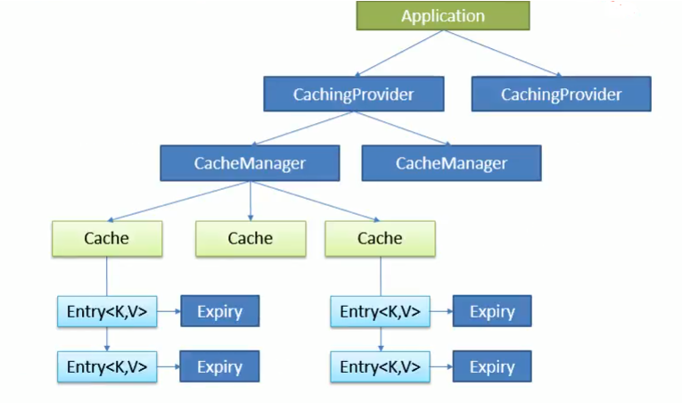
Importing JSR107 API
First, you will need to import the dependency:
1 | <dependency> |
Now, if you look at the jar package imported, you will find the five API mentioned above:
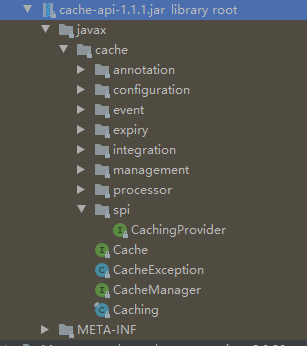
For example, in that CacheProvider class, you will see methods such as:
1 | public interface CachingProvider extends Closeable { |
and in CacheManager interface, you will find:
1 | public interface CacheManager extends Closeable { |
Then the other three classes are also straight forward enough so that they are not shown here.
However, a problem with using JSR107 is that not all implementations we use later implements JSR107. This means that if we use JSR107 APIs, we might need to implement some of the methods by ourselves for things to work correctly.
Luckily, Spring also has a solution to this by providing its own APIs, the Spring Cache Abstraction, which also allows us to use annotations (also available in JSR107).
Spring Cache Abstraction
Spring simplifies the JSR107 APIs by using only CacheManager and Cache as the central APIs (other three APIs are also implemented, but not meant for us to use directly), as well as some annotations (some from JSR-107, some made by Spring).
| API/Annotation | Usage |
|---|---|
Cache |
API that defines all the caching operation (e.g. CRUD). Spring has some default implementations including RedisCache, EhCacheCache, ConcurrentMapCache, etc. |
CacheManager |
API that creates and manages Cache. |
@Cacheable |
Mainly used on reading methods. This will cache the argument and result pair of a method call. After being cached, this method with the same argument called will not be executed anymore. |
@CacheEvict |
Mainly used on deleting methods. This will delete a specific result from the cache. |
@CachePut |
Mainly used on updating methods. This will cache/update the argument and result pair in the Cache. The method will always execute even it has been cached. |
@EnableCaching |
Enables the caching behavior with annotation described above. |
KeyGenerator |
Defines how the key data is stored in a Cache for later look ups. |
serialize |
Defines how the value data is stored in a Cache (e.g. when you are storing an object). |
Note:
- Whenever you use
@Cacheable,@CachePut, and@CacheEvicttogether, you need to make sure that they are manipulating entry with the same key!
Importing Spring Cache
To import Spring Cache Abstraction, add the following dependency to your pom.xml:
1 | <dependency> |
Using Spring Cache
First, you need to have some sort of database access setup, and some query operations implemented (assuming you want to cache those).
Now, to enable caching and start using caching operations, you need to do the following steps:
- To use annotation based caching operations, add
@EnableCachingto your application. - Use annotation
@Cacheable,@CacheEvict, etc. mentioned in the table above.- When you specify
@Cacheable(for example), you can/should also specify some of the options, includingcacheName,key/keyGenerator,cacheManager, and etc.
- When you specify
A simple example would be:
Your main application class:
1 | package com.example.testmybatis; |
One of your controller class:
1 | package com.example.testmybatis.controller; |
Now, the first time you go to localhost:8080/cache/calc/2, this method will be run and you will see the logger info Entered Cacheable Method. However, if you resend the same request by refreshing it, this method will no longer be entered yet the result will be returned (from cache).
Some of the options that you can specify with @Cacheable include:
cacheNameorvalue- This sets the name of the cache(s) that this data/entry will go to (see picture below)
keyorkeyGenerator- This sets the key of the entry that will be stored in cache (by default it uses the method argument)
- Some
SpELcan be used- e.g.
@Cacheable(key="#root.methodName + '[' + #a0 + ']'")
- e.g.
cacheManagerorcacheResolver- This sets the
cacheManagerthat its corresponding cache should point to
- This sets the
condition- This sets the condition of when to cache the entry. Entry will be cached if this condition returns
true- e.g.
@Cacheable(condition = "#a0 eq 'aaaa' and #a1 > 0")
- e.g.
- This sets the condition of when to cache the entry. Entry will be cached if this condition returns
unless- This sets the condition of when to cache the entry. Entry will not be cached if this condition returns
true
- This sets the condition of when to cache the entry. Entry will not be cached if this condition returns
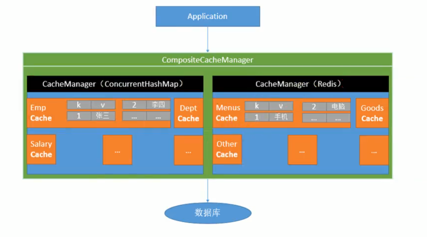
For more details on each of the options mentioned above, you can look into the class @Cacheable.
Some of the SpEL you can use in those options:
| Name | Location | Description | Example |
|---|---|---|---|
methodName |
root object | The name of the method being invoked | #root.methodName |
method |
root object | The method being invoked | #root.method.name |
target |
root object | The target object being invoked | #root.target |
targetClass |
root object | The class of the target being invoked | #root.targetClass |
args |
root object | The arguments (as array) used for invoking the target | #root.args[0] |
caches |
root object | Collection of caches against which the current method is executed | #root.caches[0].name |
| argument name | evaluation context | Name of any of the method argument. If for some reason the names are not available (ex: no debug information), the argument names are also available under the a<#arg> where #arg stands for the argument index (starting from 0). |
ibanora0(one can also usep0or p<#arg> notation as an alias). |
result |
evaluation context | The result of the method call (the value to be cached). Only available in ‘unless‘ expressions and cache evict expression (when beforeInvocation is false). |
#result |
(Table from https://docs.spring.io/spring/docs/3.2.x/spring-framework-reference/html/cache.html, for information on other SpEL, you should also visit that link)
Spring Implementation
The first thing to do is to look at the xxxAutoConfiguration of course. If we look at the CacheAutoConfigurationclass:
1 | (proxyBeanMethods = false) |
If you run this with the debugger of IntelliJ, you will see the following Configurations imported:
1 | 0 = "org.springframework.boot.autoconfigure.cache.GenericCacheConfiguration" |
To see which configurations will be used in the end, you can either look at the conditions on the class headers, or you can run your application with debug=true, from which you will see that only one Configuration is matched (assuming you were following the example made above):
1 | SimpleCacheConfiguration matched: |
Now, if you look at the SimpleCacheConfiguration class, you will see that it uses a ConcurrentMapCacheManager:
1 | (proxyBeanMethods = false) |
Further source codes will not be shown here, but in summary:
ConcurrentMapCacheManagerstores itsCacheobjects in aConcurrentMap<String, Cache>data structure, in whichStringwill be cache name.ConcurrentMapCacheManagercreates itsCachefrom the method:1
2
3
4protected Cache createConcurrentMapCache(String name) {
SerializationDelegate actualSerialization = this.isStoreByValue() ? this.serialization : null;
return new ConcurrentMapCache(name, new ConcurrentHashMap(256), this.isAllowNullValues(), actualSerialization);
}This returns a
ConcurrentMapCache, which would be theCachedata structure to store the cache- The
ConcurrentMapCachestores its key-value pair entry withConcurrentMap<Object, Object>, which means both its key and its value will be objects:
1
2
3
4
5
6
7public class ConcurrentMapCache extends AbstractValueAdaptingCache {
private final String name;
private final ConcurrentMap<Object, Object> store;
private final SerializationDelegate serialization;
...
}- The
Mechanism
What happens under the hood when a @Cacheable is encountered? For example, when a request is sent to the following handler:
1 |
|
First, before this method gets executed, it will first look for the cache name with
testby using the method fromConcurrentCacheManager:1
2
3
4
5
6
7
8
9
10
11
12
13
14
15
public Cache getCache(String name) { // this method
Cache cache = (Cache)this.cacheMap.get(name);
if (cache == null && this.dynamic) {
synchronized(this.cacheMap) {
cache = (Cache)this.cacheMap.get(name);
if (cache == null) {
cache = this.createConcurrentMapCache(name); // creates if cache does not exist
this.cacheMap.put(name, cache);
}
}
}
return cache;
}Next, with this
Cachecreated (ConcurrentMapCache), it will then first look into that cache to see if that key exists (even if the cache has just been created). This is executed inside theConcurrentMapCacheclass:1
2
3
4
protected Object lookup(Object key) {
return this.store.get(key);
}Note:
- Where does the key come from? After the method argument being passed in and before this step, there is a
generateKey()method which generates the key based on aKeyGenerator. By default, it usesSimpleKeyGenerator.
- Where does the key come from? After the method argument being passed in and before this step, there is a
If this
lookup()did not find the key, then the method in the controller will be called. If found, returns the result.If the controller continued its execution, then the returned result will not only be returned to the user, but also stored in the cache with the method in the
ConcurrentMapCacheclass:1
2
3public void put(Object key, @Nullable Object value) {
this.store.put(key, this.toStoreValue(value));
}
Example: Using a Customized KeyGenerator
First you need to inject a bean of type KeyGenerator with a specific bean name:
1 | package com.example.testmybatis.config; |
Now, to use this KeyGenerator, you just need to refer to this bean name:
1 | package com.example.testmybatis.controller; |
Example: Using @Caching
@Caching has not been mentioned before, but this is simply a collection of @Cacheable, @CachePut, and @CacheEvict annotation. Using @Caching allows us to combine complicated behavior of manipulating entries in a cache.
1 | package org.springframework.cache.annotation; |
An example usage would be:
1 | package com.example.testmybatis.controller; |
Note:
- Notice that there is a conflict between using
@Cacheableand@CachePut, namely that if@Cacheabledoes not always invoke the method yet@CachePutalways needs the method to execute. The effect in the end would be@CachePutoverriding@Cacheable, such that even if thekeyis found in the cache, the method will still execute.
Using @CacheConfig
Notice that all of the above annotations have to specify cacheName= "test". Is there a way to centralize those common configurations altogether to save the typing? This can be achieved with @CacheConfig annotation with some specified properties at the class level.
The @CacheConfig class looks like:
1 | package org.springframework.cache.annotation; |
This means that you can specify four common properties for all the cache annotations in the same class. For example:
1 | package com.example.testmybatis.controller; |
Using Redis in Spring Cache
By default, Spring uses SimpleCacheConfiguration, which stores cache data essentially in ConcurrentMap<Object, Object> data structure. However, what if we want to use Redis as our caching mechanism? To do this, we need to make sure that RedisCacheConfiguration is imported and enabled in our project.
Importing Redis
If you look at RedisCacheConfiguration class, you will see the following class header:
1 | (proxyBeanMethods = false) |
Therefore, the logical step would be importing the Redis dependency related to Spring:
1 | <dependency> |
Since this is related to Spring Boot Starter, it will use the RedisAutoConfiguration class:
1 | (proxyBeanMethods = false) |
Notice that we will have RedisTemplate<Object, Object> injected as bean into our project (remember the JDBCTemplate that we used before), which we will touch on shortly.
Configuring your Redis Connection
This is even simpler than configuring database connection: all you need to do is to specify your Redis host IP and port (by default 6379):
1 | spring: |
Once the connection is established, all you need to do is to use either RedisTemplate<Object, Object>, or StringRedisTemplate.
Using your Redis Templates
There are two templates injected into your container:
RedisTemplate<Object, Object>- This is used mainly when you need to write commands operating with Java objects
StringRedisTemplate- This is used mainly when you just need to write simple string commands
Similar to JDBCTemplate, you just need to Autowire either or both of the templates. For example:
1 |
|
In general, StringRedisTemplate would be simpler to use. To operate with the data structures in Redis with StringRedisTemplate, all you need to do is to call the method opsForXXX():
| Method Name | Redis Operation |
|---|---|
opsForValue() |
Operations with String in Redis |
opsForSet() |
Operations with Set in Redis |
opsForList() |
Operations with List in Redis |
opsForHash() |
Operations with Hash in Redis |
opsForZSet() |
Operations with Zset in Redis |
For example:
1 |
|
Introduction to Distributed Computing
In the manual above, we were using the MVC (Model-View-Controller) architecture. This works fine, but problem occurs when request to a certain service increases, which would cause heavy server load and hence performance issues. Therefore, distributed model has been promoted when needs for a service are high.

Basic Mechanism
The central question for distributed computing is: how can a client/remote server access services from other remote servers? The simplest model involves using a registry - a place where all the information of all the provided services is kept.
So in general, the mechanism is:
- A provider provides its services/implementations to a registry
- A client subscribes and retrieves a list of available services
- A client uses the service by telling registry to invoke/call methods from the provider
 “
“
(Dubbo is the tool for providing all those RPC - remote procedure call - mechanism, while ZooKeeper could be the registry)
Using Spring Cloud for Distributed Computing
While you could use Dubbo and ZooKeeper to establish a distributed computing system for your application, Spring Cloud also provides a well-rounded solution for distributing services.
In summary, to setup the simple system mentioned above, you would need to:
- Create a Eureka Server/Registry
- Include necessary dependencies (see below)
- Configure Eureka server settings in
application.yml - Use
@EnableEurekaServerand start the application to start the server/registry
- Create a Service Provider
- Include necessary dependencies (see below)
- Configure Eureka server settings in
application.ymlfor connection - Create (a)
RestController(s)to provide certain service(s) - This would look like a normal Spring Web application, except for the second step
- Create a Consumer/User
- Also need to include Spring Cloud related dependencies (see below)
- Configure Eureka server settings in
application.ymlfor connection - Use
@EnableDiscoveryClientannotation to make registered services available - Inject a bean
RestTemplatewhich would be able to invoke service calls and pass its result to us - Create a controller (or anything) to use that
RestTemplate
Example: Starting a Eureka Server/Registry
First, the necessary dependencies include:
1 | <parent> |
Then, your configuration for your Eureka server could be:
1 | server: |
Finally, to start your Eureka server, you would use the annotation @EnableEurekaServer
1 | package com.example.testeurekaserver; |
Now, if you visit localhost:8765, you will see the page for viewing current Eureka server’s status.
Example: Registering Services to Eureka Server
First, you would need the following dependencies:
1 | <parent> |
Then, your application.yml would look like this:
1 | server: |
By setting eureka.instance.prefer-ip-address=true, it enables us to easily register the same service over several machines. This will be shown slightly later.
Now, you can create some simple service. For example:
1 | package com.example.testproviderticket.service; |
And a controller for that service (Eureka uses HTTP for data transport):
1 | package com.example.testproviderticket.controller; |
Now, if you run localhost:8001/ticket, you will see the normal result as if it is a simple Spring Web Application. However, if you now look at localhost:8765 (the address for Eureka registry), you will see the newly registered service.
Note:
- To register/use services in Eureka Server, you need to make sure that the server is running.
Lastly, if you want to register the same service for multiple times, you can simply change the server.port to a different number, package the service application you created in this example as a jar, and run it. Now, if you go to Eureka server, you will see that the same service will now be provided in multiple ports! (This means you could easily deploy and register a service on multiple remotes).
Example: Creating a Consumer/User for Using Registered Services
First, you need to include dependencies such as:
1 | <parent> |
Then, your Eureka server configuration would look like:
1 | server: |
Now, in order to discover and use services there, you need to have:
1 | package com.example.testconsumeruser; |
Lastly, to use registered services, you just need to have a controller (for example) using that RestTemplate:
1 | package com.example.testconsumeruser.controller; |
Now, if you go to localhost:8010/buy?name=test, you will see that everything works that it invokes services/methods from other applications registered on Eureka server.